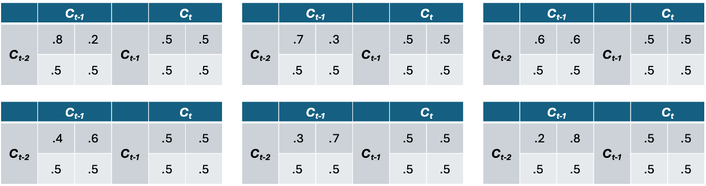
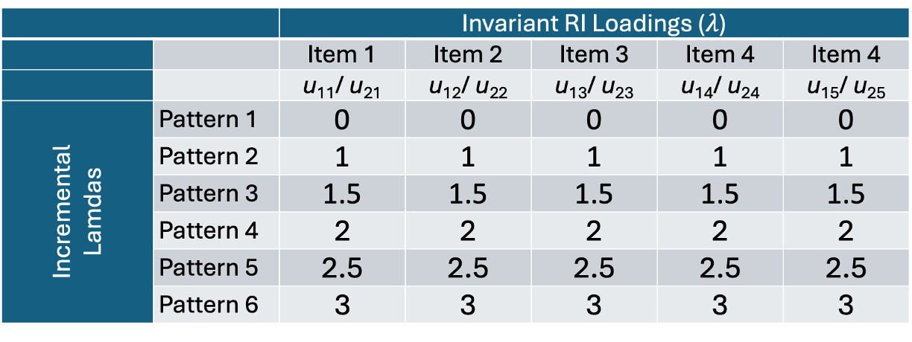

library(tidyverse)
library(glue)
library(MplusAutomation)
library(here)
library(gt)
library(janitor)
library(parallel)
library(tools)
library(stringr)Understanding the Performance of Random Intercepts Latent Transition Analysis (RI-LTA): A Monte Carlo Simulation Study with MplusAutomation
Study 1.8: RILTA Generated, RILTA Analyzed with Three Timepoints


Introduction
Study 1.8: RILTA Generated, RILTA Analyzed
Load Packages
Simulation
Part 1: Conduct Simulation
In this section, I am conducting a simulation where I am generating data as Latent Transition Analysis and analyzing it as Random Intercepts Latent Transition Analysis to fully explore the model’s performance. The simulation consists of 144 conditions, combining four sample sizes (N = 500, 1000, 2000, 4000) with six transition probabilities linked to logits (betas; 1.385, .85, .41, -.41, -.85, -1.385), corresponding to probabilities of .8, .7, .6, .4, .3, and .2., and lambda loadings on the random intercept of 0, 1, 1.5, 2, 2.5, and 3. These conditions are iterated over programmatically using MplusAutomation to set up and execute the models. To speed up the process, I employ parallel processing, which distributes computations across multiple CPU cores, enabling efficient completion of the simulations across all scenarios.
Conditions:
Sample Size: N = 500, 1000, 2000, and 4000
Transition Probability beta (probability): TPs = 1.385 (.8), .85 (.7), .41 (.6), -.41 (.4), -.85 (.3) , and -1.385 (.2)

RI Loadings: lambda = 0, 1, 1.5, 2, 2.5, and 3

Setting up the Simulation Conditions
p1 <- expand.grid(N = c(500, 1000, 2000, 4000),
TPs = c(1.385, .85, .41, -.41, -.85, -1.385),
lambda = c(0, 1, 1.5, 2, 2.5, 3))
# Display the matrix using gt
p1 %>%
gt() %>%
tab_header(
title = "Simulation Conditions Matrix",
subtitle = "Combinations of Sample Sizes, Transition Probabilities, and Mixtures"
) %>%
cols_align(
align = "center",
columns = everything() # Centers all columns
)| Simulation Conditions Matrix | ||
|---|---|---|
| Combinations of Sample Sizes, Transition Probabilities, and Mixtures | ||
| N | TPs | lambda |
| 500 | 1.385 | 0.0 |
| 1000 | 1.385 | 0.0 |
| 2000 | 1.385 | 0.0 |
| 4000 | 1.385 | 0.0 |
| 500 | 0.850 | 0.0 |
| 1000 | 0.850 | 0.0 |
| 2000 | 0.850 | 0.0 |
| 4000 | 0.850 | 0.0 |
| 500 | 0.410 | 0.0 |
| 1000 | 0.410 | 0.0 |
| 2000 | 0.410 | 0.0 |
| 4000 | 0.410 | 0.0 |
| 500 | -0.410 | 0.0 |
| 1000 | -0.410 | 0.0 |
| 2000 | -0.410 | 0.0 |
| 4000 | -0.410 | 0.0 |
| 500 | -0.850 | 0.0 |
| 1000 | -0.850 | 0.0 |
| 2000 | -0.850 | 0.0 |
| 4000 | -0.850 | 0.0 |
| 500 | -1.385 | 0.0 |
| 1000 | -1.385 | 0.0 |
| 2000 | -1.385 | 0.0 |
| 4000 | -1.385 | 0.0 |
| 500 | 1.385 | 1.0 |
| 1000 | 1.385 | 1.0 |
| 2000 | 1.385 | 1.0 |
| 4000 | 1.385 | 1.0 |
| 500 | 0.850 | 1.0 |
| 1000 | 0.850 | 1.0 |
| 2000 | 0.850 | 1.0 |
| 4000 | 0.850 | 1.0 |
| 500 | 0.410 | 1.0 |
| 1000 | 0.410 | 1.0 |
| 2000 | 0.410 | 1.0 |
| 4000 | 0.410 | 1.0 |
| 500 | -0.410 | 1.0 |
| 1000 | -0.410 | 1.0 |
| 2000 | -0.410 | 1.0 |
| 4000 | -0.410 | 1.0 |
| 500 | -0.850 | 1.0 |
| 1000 | -0.850 | 1.0 |
| 2000 | -0.850 | 1.0 |
| 4000 | -0.850 | 1.0 |
| 500 | -1.385 | 1.0 |
| 1000 | -1.385 | 1.0 |
| 2000 | -1.385 | 1.0 |
| 4000 | -1.385 | 1.0 |
| 500 | 1.385 | 1.5 |
| 1000 | 1.385 | 1.5 |
| 2000 | 1.385 | 1.5 |
| 4000 | 1.385 | 1.5 |
| 500 | 0.850 | 1.5 |
| 1000 | 0.850 | 1.5 |
| 2000 | 0.850 | 1.5 |
| 4000 | 0.850 | 1.5 |
| 500 | 0.410 | 1.5 |
| 1000 | 0.410 | 1.5 |
| 2000 | 0.410 | 1.5 |
| 4000 | 0.410 | 1.5 |
| 500 | -0.410 | 1.5 |
| 1000 | -0.410 | 1.5 |
| 2000 | -0.410 | 1.5 |
| 4000 | -0.410 | 1.5 |
| 500 | -0.850 | 1.5 |
| 1000 | -0.850 | 1.5 |
| 2000 | -0.850 | 1.5 |
| 4000 | -0.850 | 1.5 |
| 500 | -1.385 | 1.5 |
| 1000 | -1.385 | 1.5 |
| 2000 | -1.385 | 1.5 |
| 4000 | -1.385 | 1.5 |
| 500 | 1.385 | 2.0 |
| 1000 | 1.385 | 2.0 |
| 2000 | 1.385 | 2.0 |
| 4000 | 1.385 | 2.0 |
| 500 | 0.850 | 2.0 |
| 1000 | 0.850 | 2.0 |
| 2000 | 0.850 | 2.0 |
| 4000 | 0.850 | 2.0 |
| 500 | 0.410 | 2.0 |
| 1000 | 0.410 | 2.0 |
| 2000 | 0.410 | 2.0 |
| 4000 | 0.410 | 2.0 |
| 500 | -0.410 | 2.0 |
| 1000 | -0.410 | 2.0 |
| 2000 | -0.410 | 2.0 |
| 4000 | -0.410 | 2.0 |
| 500 | -0.850 | 2.0 |
| 1000 | -0.850 | 2.0 |
| 2000 | -0.850 | 2.0 |
| 4000 | -0.850 | 2.0 |
| 500 | -1.385 | 2.0 |
| 1000 | -1.385 | 2.0 |
| 2000 | -1.385 | 2.0 |
| 4000 | -1.385 | 2.0 |
| 500 | 1.385 | 2.5 |
| 1000 | 1.385 | 2.5 |
| 2000 | 1.385 | 2.5 |
| 4000 | 1.385 | 2.5 |
| 500 | 0.850 | 2.5 |
| 1000 | 0.850 | 2.5 |
| 2000 | 0.850 | 2.5 |
| 4000 | 0.850 | 2.5 |
| 500 | 0.410 | 2.5 |
| 1000 | 0.410 | 2.5 |
| 2000 | 0.410 | 2.5 |
| 4000 | 0.410 | 2.5 |
| 500 | -0.410 | 2.5 |
| 1000 | -0.410 | 2.5 |
| 2000 | -0.410 | 2.5 |
| 4000 | -0.410 | 2.5 |
| 500 | -0.850 | 2.5 |
| 1000 | -0.850 | 2.5 |
| 2000 | -0.850 | 2.5 |
| 4000 | -0.850 | 2.5 |
| 500 | -1.385 | 2.5 |
| 1000 | -1.385 | 2.5 |
| 2000 | -1.385 | 2.5 |
| 4000 | -1.385 | 2.5 |
| 500 | 1.385 | 3.0 |
| 1000 | 1.385 | 3.0 |
| 2000 | 1.385 | 3.0 |
| 4000 | 1.385 | 3.0 |
| 500 | 0.850 | 3.0 |
| 1000 | 0.850 | 3.0 |
| 2000 | 0.850 | 3.0 |
| 4000 | 0.850 | 3.0 |
| 500 | 0.410 | 3.0 |
| 1000 | 0.410 | 3.0 |
| 2000 | 0.410 | 3.0 |
| 4000 | 0.410 | 3.0 |
| 500 | -0.410 | 3.0 |
| 1000 | -0.410 | 3.0 |
| 2000 | -0.410 | 3.0 |
| 4000 | -0.410 | 3.0 |
| 500 | -0.850 | 3.0 |
| 1000 | -0.850 | 3.0 |
| 2000 | -0.850 | 3.0 |
| 4000 | -0.850 | 3.0 |
| 500 | -1.385 | 3.0 |
| 1000 | -1.385 | 3.0 |
| 2000 | -1.385 | 3.0 |
| 4000 | -1.385 | 3.0 |
Run Initial Simulation
Code
library(parallel)
# Step 1: Create the cluster for parallel processing
num_cores <- detectCores() - 1 # Detect the number of available cores (minus 1)
cl <- makeCluster(num_cores, type = "PSOCK") # Create the PSOCK cluster
rilta_rilta_func <- function(N, TPs, lambda) {
RILTA_RILTA <- mplusObject(
TITLE = glue("Generate RILTA_RILTA_N_{N}_TP = {TPs}_TH_1_lambda_{lambda}"),
MONTECARLO =
glue("NAMES = u11-u15 u21-u25 u31-u35;
GENERATE = u11-u15 u21-u25 u31-u35(1);
CATEGORICAL = u11-u15 u21-u25 u31-u35;
GENCLASSES = c1(2) c2(2) c3(2);
CLASSES = c1(2) c2(2) c3(2);
NOBSERVATIONS = {N};
SEED = 07252005;
NREPS = 500;
!!SAVE = repM1*.dat;
RESULTS = RILTA_RILTA_N_{N}_TP_{TPs}_TH_1_lambda_{lambda}.csv;"),
ANALYSIS =
"TYPE = MIXTURE;
algorithm = integration;
processors = 24;
starts = 50 10;
logcriterion=0.00001;
mconv=0.00001;",
MODELPOPULATION = glue("
%OVERALL%
[c1#1-c3#1*0];
c2#1 on c1#1*{TPs};
c3#1 on c2#1*0;
f by u11-u15*{lambda} (p1-p5)
u21-u25*{lambda} (p1-p5)
u31-u35*{lambda} (p1-p5);
f@1;
[f@0];
MODEL POPULATION-c1:
%c1#1%
[u11$1*1 u12$1*1 u13$1*1 u14$1*1 u15$1*1] (p111-p115);
%c1#2%
[u11$1*-1 u12$1*-1 u13$1*-1 u14$1*-1 u15$1*-1] (p121-p125);
MODEL POPULATION-c2:
%c2#1%
[u21$1*1 u22$1*1 u23$1*1 u24$1*1 u25$1*1] (p111-p115);
%c2#2%
[u21$1*-1 u22$1*-1 u23$1*-1 u24$1*-1 u25$1*-1] (p121-p125);
MODEL POPULATION-c3:
%c3#1%
[u31$1*1 u32$1*1 u33$1*1 u34$1*1 u35$1*1] (p111-p115);
%c3#2%
[u31$1*-1 u32$1*-1 u33$1*-1 u34$1*-1 u35$1*-1] (p121-p125);
"),
MODEL =
glue("
%OVERALL%
[c1#1-c3#1*0](par1-par3);
c2#1 on c1#1*{TPs} (par11);
c3#1 on c2#1*0;
f by u11-u15*{lambda} (p1-p5)
u21-u25*{lambda} (p1-p5)
u31-u35*{lambda} (p1-p5);
f@1;
[f@0];
MODEL c1:
%c1#1%
[u11$1*1 u12$1*1 u13$1*1 u14$1*1 u15$1*1] (p111-p115);
%c1#2%
[u11$1*-1 u12$1*-1 u13$1*-1 u14$1*-1 u15$1*-1] (p121-p125);
MODEL c2:
%c2#1%
[u21$1*1 u22$1*1 u23$1*1 u24$1*1 u25$1*1] (p111-p115);
%c2#2%
[u21$1*-1 u22$1*-1 u23$1*-1 u24$1*-1 u25$1*-1] (p121-p125);
MODEL c3:
%c3#1%
[u31$1*1 u32$1*1 u33$1*1 u34$1*1 u35$1*1] (p111-p115);
%c3#2%
[u31$1*-1 u32$1*-1 u33$1*-1 u34$1*-1 u35$1*-1] (p121-p125);
"),
MODELCONSTRAINT =
if (TPs == 1.385) {
glue("
New(
trans11*.80 trans12*.20 trans21*.5 trans22*.5
prob11*.5 prob12*.5 prob21*.65 prob22*.35);
trans11 = 1/(1+exp(-(par2+par11)));
trans12 = 1-trans11;
trans21 = 1/(1+exp(-par2));
trans22 = 1- trans21;
!marginal probabilities at T1 and T2:
prob11 = 1/(1+exp(-par1));
prob12 = 1 - prob11;
prob21 = prob11*trans11+prob12*trans21;
prob22 = 1- prob21;
")
}
else if (TPs == .85) {
glue("
New(
trans11*.70 trans12*.30 trans21*.5 trans22*.5
prob11*.5 prob12*.5 prob21*.60 prob22*.4);
trans11 = 1/(1+exp(-(par2+par11)));
trans12 = 1-trans11;
trans21 = 1/(1+exp(-par2));
trans22 = 1- trans21;
!marginal probabilities at T1 and T2:
prob11 = 1/(1+exp(-par1));
prob12 = 1 - prob11;
prob21 = prob11*trans11+prob12*trans21;
prob22 = 1- prob21;
")
}
else if (TPs == .41) {
glue("
New(
trans11*.60 trans12*.40 trans21*.5 trans22*.5
prob11*.5 prob12*.5 prob21*.55 prob22*.45);
trans11 = 1/(1+exp(-(par2+par11)));
trans12 = 1-trans11;
trans21 = 1/(1+exp(-par2));
trans22 = 1- trans21;
!marginal probabilities at T1 and T2:
prob11 = 1/(1+exp(-par1));
prob12 = 1 - prob11;
prob21 = prob11*trans11+prob12*trans21;
prob22 = 1- prob21;
")
}
else if (TPs == -.41) {
glue("
New(
trans11*.40 trans12*.60 trans21*.5 trans22*.5
prob11*.5 prob12*.5 prob21*.45 prob22*.55);
trans11 = 1/(1+exp(-(par2+par11)));
trans12 = 1-trans11;
trans21 = 1/(1+exp(-par2));
trans22 = 1- trans21;
!marginal probabilities at T1 and T2:
prob11 = 1/(1+exp(-par1));
prob12 = 1 - prob11;
prob21 = prob11*trans11+prob12*trans21;
prob22 = 1- prob21;
")
}
else if (TPs == -.85) {
glue("
New(
trans11*.30 trans12*.70 trans21*.5 trans22*.5
prob11*.5 prob12*.5 prob21*.40 prob22*.60);
trans11 = 1/(1+exp(-(par2+par11)));
trans12 = 1-trans11;
trans21 = 1/(1+exp(-par2));
trans22 = 1- trans21;
!marginal probabilities at T1 and T2:
prob11 = 1/(1+exp(-par1));
prob12 = 1 - prob11;
prob21 = prob11*trans11+prob12*trans21;
prob22 = 1- prob21;
")
}
else if (TPs == -1.385) {
glue("
New(
trans11*.20 trans12*.80 trans21*.5 trans22*.5
prob11*.5 prob12*.5 prob21*.35 prob22*.65);
trans11 = 1/(1+exp(-(par2+par11)));
trans12 = 1-trans11;
trans21 = 1/(1+exp(-par2));
trans22 = 1- trans21;
!marginal probabilities at T1 and T2:
prob11 = 1/(1+exp(-par1));
prob12 = 1 - prob11;
prob21 = prob11*trans11+prob12*trans21;
prob22 = 1- prob21;")
}
)
# Run Mplus model
RILTA_RILTA_Model<- mplusModeler(RILTA_RILTA,
dataout = here('Simulations', 'STUDY_1', '3 Time Points', '7_3T_RILTA_GEN_LTA_ANALYZED', glue("RILTA_RILTA_N_{N}_TP_{TPs}_TH_1_lambda_{lambda}.dat")),
modelout = glue(here('Simulations', 'STUDY_1', '3 Time Points', '7_3T_RILTA_GEN_LTA_ANALYZED', "RILTA_RILTA_N_{N}_TP_{TPs}_TH_1_lambda_{lambda}.inp")),
check = TRUE, run = TRUE, hashfilename = FALSE)
return(RILTA_RILTA_Model)
}
# Step 3: Export necessary objects to the cluster
clusterExport(cl, c("rilta_rilta_func", "p1", "here", "glue", "mplusModeler", "mplusObject"))
# Ensure necessary libraries are loaded on each cluster node
clusterEvalQ(cl, {
library(MplusAutomation)
library(glue)
library(here)
})
# Step 4: Run the simulation in parallel using the cluster
result_list <- parLapply(cl, 1:nrow(p1), function(i) {
rilta_rilta_func(p1$N[i], p1$TPs[i], p1$lambda[i])
})
# Step 5: Stop the cluster after the simulation
stopCluster(cl)Data Processing and Verification
Check for Label Switching and Errors
In this section: .csv files are first merged into a single data frame, from which specific parameters are extracted. Logit values are then converted to probabilities, and known class values are incorporated into the data frame. A subset of cases involving label switching is selected randomly and plotted for visual review. Output files are scanned for errors, which are subsequently merged back into the original data file. Additional columns derived from the file name are added, and the percentage of violations is calculated. Both errors and label switching violations are visually represented, and the total number of corrected replications is reported.
Scrape Mplus CSV Files
First, Load all CSV files and combine them into a single data frame.
# Set the correct CSV directory
csv_directory <- here('Simulations', 'STUDY_1', '3 Time Points', '8_3T_RILTA_GEN_RILTA_ANALYZED')
# Source the child document
source(here('Child_Docs', 'data_scraping.R'))Slice Data / Extract Parameters
Extract data from the appropriate rows from each 9-row chunk and prepare the data for further processing.
# Process the data using the child script
source(here('Child_Docs', 'step2_3t_RILTA.R'))
# Will populate final_combined_data dataframe in global environmentWrangle Data
Convert the logits to probabilities and add the known actual values to each row.
# Process the data and return results
source(here('Child_Docs', 'step_3.R'))
# The objects `final_data_with_actuals` and `violators` should now be in the global environmentGenerate Plots of Label Switching
Generate plots of randomly sampled violators for visual inspection using parallel processing.
Code
# Set plot width and height
plot_width <- 8
plot_height <- 6
# Take a random sample of up to 250 violators (ensure not to exceed the total number of violators)
set.seed(123) # For reproducibility
sample_size <- min(nrow(violators), 250) # Handle cases where fewer than 250 violators exist
sampled_violators <- violators[sample(nrow(violators), sample_size), ]
# Define the function to create plots sequentially
plot_violator <- function(i) {
row_data <- sampled_violators[i, ]
# Extract the file name from the current row
file_name <- row_data$FileName
# Extract probability values for EC1 and EC2 (estimated probabilities) and AC1 and AC2 (actuals)
estimated_probabilities <- c(
as.numeric(row_data[c("Ec1u1", "Ec1u2", "Ec1u3", "Ec1u4", "Ec1u5")]),
as.numeric(row_data[c("Ec2u1", "Ec2u2", "Ec2u3", "Ec2u4", "Ec2u5")])
)
actual_values <- c(
as.numeric(row_data[c("Ac1u1", "Ac1u2", "Ac1u3", "Ac1u4", "Ac1u5")]),
as.numeric(row_data[c("Ac2u1", "Ac2u2", "Ac2u3", "Ac2u4", "Ac2u5")])
)
# Create labels for the legend with actual values directly from the dataset
labels <- c(
paste0("EC1: (", round(row_data$Ec1u1, 3), ", ", round(row_data$Ec1u2, 3), ", ", round(row_data$Ec1u3, 3), ", ", round(row_data$Ec1u4, 3), ", ", round(row_data$Ec1u5, 3), ")"),
paste0("EC2: (", round(row_data$Ec2u1, 3), ", ", round(row_data$Ec2u2, 3), ", ", round(row_data$Ec2u3, 3), ", ", round(row_data$Ec2u4, 3), ", ", round(row_data$Ec2u5, 3), ")"),
paste0("AC1: (", round(row_data$Ac1u1, 3), ", ", round(row_data$Ac1u2, 3), ", ", round(row_data$Ac1u3, 3), ", ", round(row_data$Ac1u4, 3), ", ", round(row_data$Ac1u5, 3), ")"),
paste0("AC2: (", round(row_data$Ac2u1, 3), ", ", round(row_data$Ac2u2, 3), ", ", round(row_data$Ac2u3, 3), ", ", round(row_data$Ac2u4, 3), ", ", round(row_data$Ac2u5, 3), ")")
)
# Step 6: Create a data frame for plotting
plot_data <- data.frame(
Items = rep(1:5, 4),
Probabilities = c(estimated_probabilities, actual_values),
Class = rep(labels, each = 5)
)
# Step 7: Create the plot with the file name in the title
p <- ggplot(plot_data, aes(x = Items, y = Probabilities, color = Class, group = Class)) +
geom_line(size = 1.2) +
geom_point(size = 3) +
labs(title = file_name, x = "Items", y = "Probabilities") + # Only the file name in the title
theme_minimal(base_size = 16) +
theme(panel.background = element_rect(fill = "white"),
plot.background = element_rect(fill = "white"),
plot.title = element_text(size = 14, hjust = 0.5)) + # Adjust title size and center
scale_color_manual(values = c(
"darkblue", "darkgreen", # EC1 and EC2 (Estimated Probabilities)
"lightblue", "lightgreen" # AC1 and AC2 (Actual Values)
))
ggsave(filename = file.path("3 Time Points", "zVIOLATOR_PLOTS","z3t_rilta_rilta_violator_plots", paste0("violator_plot_", i, "_", file_name, ".png")),
plot = p, width = plot_width, height = plot_height)
}
# Apply the function to generate plots sequentially (without parallelization)
invisible(lapply(1:sample_size, plot_violator))Error Handling
Scrape for Errors
Scrape output files for errors
# Step 1: Set the correct output directory for .out files
output_folder <- here('Simulations', 'STUDY_1', '3 Time Points', '8_3T_RILTA_GEN_RILTA_ANALYZED')
# Step 2: Source the child document that processes .out files
source(here('Child_Docs', 'out_scraping.R'))Tabulate Error Rates
Create Visual Summary of Errors per Condition
replication_summary_table <- replication_summary %>%
gt() %>%
tab_header(
title = "Replication Summary",
subtitle = paste0("Folder: ", output_folder)
) %>%
fmt_number(
columns = c("ErrorRate"), # Use the actual column name, ensure it matches your dataframe
decimals = 2
) %>%
cols_label(
FileName = "File Name",
CompletedReplications = "Completed Replications",
RequestedReplications = "Requested Replications",
ErrorReplications = "Replications with Errors",
GoodReplications = "Good Replications",
ErrorRate = "Error Rate (%)"
) %>%
cols_align(
align = "center",
columns = everything() # This aligns all columns' text to center
) %>%
tab_options(
table.font.size = "small",
heading.title.font.size = "medium",
heading.subtitle.font.size = "small",
table.width = pct(80) # Adjust this percentage to reduce the width of the table
)
# Display the table
replication_summary_table| Replication Summary | |||||
|---|---|---|---|---|---|
| Folder: /Users/brucecarter/Library/CloudStorage/Box-Box/RILTAS/RILTA_SIMULATION_STUDY/Simulations/STUDY_1/3 Time Points/8_3T_RILTA_GEN_RILTA_ANALYZED | |||||
| File Name | Requested Replications | Completed Replications | Replications with Errors | Good Replications | Error Rate (%) |
| rilta_rilta_n_1000_tp_-0.41_th_1_lambda_0 | 500 | 500 | 0 | 500 | 0.00 |
| rilta_rilta_n_1000_tp_-0.41_th_1_lambda_1.5 | 500 | 500 | 0 | 500 | 0.00 |
| rilta_rilta_n_1000_tp_-0.41_th_1_lambda_1 | 500 | 500 | 0 | 500 | 0.00 |
| rilta_rilta_n_1000_tp_-0.41_th_1_lambda_2.5 | 500 | 500 | 0 | 500 | 0.00 |
| rilta_rilta_n_1000_tp_-0.41_th_1_lambda_2 | 500 | 500 | 0 | 500 | 0.00 |
| rilta_rilta_n_1000_tp_-0.41_th_1_lambda_3 | 500 | 500 | 0 | 500 | 0.00 |
| rilta_rilta_n_1000_tp_-0.85_th_1_lambda_0 | 500 | 500 | 0 | 500 | 0.00 |
| rilta_rilta_n_1000_tp_-0.85_th_1_lambda_1.5 | 500 | 500 | 0 | 500 | 0.00 |
| rilta_rilta_n_1000_tp_-0.85_th_1_lambda_1 | 500 | 500 | 0 | 500 | 0.00 |
| rilta_rilta_n_1000_tp_-0.85_th_1_lambda_2.5 | 500 | 500 | 0 | 500 | 0.00 |
| rilta_rilta_n_1000_tp_-0.85_th_1_lambda_2 | 500 | 500 | 0 | 500 | 0.00 |
| rilta_rilta_n_1000_tp_-0.85_th_1_lambda_3 | 500 | 500 | 0 | 500 | 0.00 |
| rilta_rilta_n_1000_tp_-1.385_th_1_lambda_0 | 500 | 500 | 0 | 500 | 0.00 |
| rilta_rilta_n_1000_tp_-1.385_th_1_lambda_1.5 | 500 | 500 | 0 | 500 | 0.00 |
| rilta_rilta_n_1000_tp_-1.385_th_1_lambda_1 | 500 | 500 | 0 | 500 | 0.00 |
| rilta_rilta_n_1000_tp_-1.385_th_1_lambda_2.5 | 500 | 500 | 0 | 500 | 0.00 |
| rilta_rilta_n_1000_tp_-1.385_th_1_lambda_2 | 500 | 500 | 0 | 500 | 0.00 |
| rilta_rilta_n_1000_tp_-1.385_th_1_lambda_3 | 500 | 500 | 0 | 500 | 0.00 |
| rilta_rilta_n_1000_tp_0.41_th_1_lambda_0 | 500 | 500 | 0 | 500 | 0.00 |
| rilta_rilta_n_1000_tp_0.41_th_1_lambda_1.5 | 500 | 500 | 0 | 500 | 0.00 |
| rilta_rilta_n_1000_tp_0.41_th_1_lambda_1 | 500 | 500 | 0 | 500 | 0.00 |
| rilta_rilta_n_1000_tp_0.41_th_1_lambda_2.5 | 500 | 500 | 0 | 500 | 0.00 |
| rilta_rilta_n_1000_tp_0.41_th_1_lambda_2 | 500 | 500 | 0 | 500 | 0.00 |
| rilta_rilta_n_1000_tp_0.41_th_1_lambda_3 | 500 | 500 | 0 | 500 | 0.00 |
| rilta_rilta_n_1000_tp_0.85_th_1_lambda_0 | 500 | 500 | 0 | 500 | 0.00 |
| rilta_rilta_n_1000_tp_0.85_th_1_lambda_1.5 | 500 | 500 | 0 | 500 | 0.00 |
| rilta_rilta_n_1000_tp_0.85_th_1_lambda_1 | 500 | 500 | 0 | 500 | 0.00 |
| rilta_rilta_n_1000_tp_0.85_th_1_lambda_2.5 | 500 | 500 | 0 | 500 | 0.00 |
| rilta_rilta_n_1000_tp_0.85_th_1_lambda_2 | 500 | 500 | 0 | 500 | 0.00 |
| rilta_rilta_n_1000_tp_0.85_th_1_lambda_3 | 500 | 500 | 0 | 500 | 0.00 |
| rilta_rilta_n_1000_tp_1.385_th_1_lambda_0 | 500 | 500 | 0 | 500 | 0.00 |
| rilta_rilta_n_1000_tp_1.385_th_1_lambda_1.5 | 500 | 500 | 0 | 500 | 0.00 |
| rilta_rilta_n_1000_tp_1.385_th_1_lambda_1 | 500 | 500 | 0 | 500 | 0.00 |
| rilta_rilta_n_1000_tp_1.385_th_1_lambda_2.5 | 500 | 500 | 0 | 500 | 0.00 |
| rilta_rilta_n_1000_tp_1.385_th_1_lambda_2 | 500 | 500 | 0 | 500 | 0.00 |
| rilta_rilta_n_1000_tp_1.385_th_1_lambda_3 | 500 | 500 | 0 | 500 | 0.00 |
| rilta_rilta_n_2000_tp_-0.41_th_1_lambda_0 | 500 | 500 | 0 | 500 | 0.00 |
| rilta_rilta_n_2000_tp_-0.41_th_1_lambda_1.5 | 500 | 500 | 0 | 500 | 0.00 |
| rilta_rilta_n_2000_tp_-0.41_th_1_lambda_1 | 500 | 500 | 0 | 500 | 0.00 |
| rilta_rilta_n_2000_tp_-0.41_th_1_lambda_2.5 | 500 | 500 | 0 | 500 | 0.00 |
| rilta_rilta_n_2000_tp_-0.41_th_1_lambda_2 | 500 | 500 | 0 | 500 | 0.00 |
| rilta_rilta_n_2000_tp_-0.41_th_1_lambda_3 | 500 | 500 | 0 | 500 | 0.00 |
| rilta_rilta_n_2000_tp_-0.85_th_1_lambda_0 | 500 | 500 | 0 | 500 | 0.00 |
| rilta_rilta_n_2000_tp_-0.85_th_1_lambda_1.5 | 500 | 500 | 0 | 500 | 0.00 |
| rilta_rilta_n_2000_tp_-0.85_th_1_lambda_1 | 500 | 500 | 0 | 500 | 0.00 |
| rilta_rilta_n_2000_tp_-0.85_th_1_lambda_2.5 | 500 | 500 | 0 | 500 | 0.00 |
| rilta_rilta_n_2000_tp_-0.85_th_1_lambda_2 | 500 | 500 | 0 | 500 | 0.00 |
| rilta_rilta_n_2000_tp_-0.85_th_1_lambda_3 | 500 | 500 | 0 | 500 | 0.00 |
| rilta_rilta_n_2000_tp_-1.385_th_1_lambda_0 | 500 | 500 | 0 | 500 | 0.00 |
| rilta_rilta_n_2000_tp_-1.385_th_1_lambda_1.5 | 500 | 500 | 0 | 500 | 0.00 |
| rilta_rilta_n_2000_tp_-1.385_th_1_lambda_1 | 500 | 500 | 0 | 500 | 0.00 |
| rilta_rilta_n_2000_tp_-1.385_th_1_lambda_2.5 | 500 | 500 | 0 | 500 | 0.00 |
| rilta_rilta_n_2000_tp_-1.385_th_1_lambda_2 | 500 | 500 | 0 | 500 | 0.00 |
| rilta_rilta_n_2000_tp_-1.385_th_1_lambda_3 | 500 | 500 | 0 | 500 | 0.00 |
| rilta_rilta_n_2000_tp_0.41_th_1_lambda_0 | 500 | 500 | 0 | 500 | 0.00 |
| rilta_rilta_n_2000_tp_0.41_th_1_lambda_1.5 | 500 | 500 | 0 | 500 | 0.00 |
| rilta_rilta_n_2000_tp_0.41_th_1_lambda_1 | 500 | 500 | 0 | 500 | 0.00 |
| rilta_rilta_n_2000_tp_0.41_th_1_lambda_2.5 | 500 | 500 | 0 | 500 | 0.00 |
| rilta_rilta_n_2000_tp_0.41_th_1_lambda_2 | 500 | 500 | 0 | 500 | 0.00 |
| rilta_rilta_n_2000_tp_0.41_th_1_lambda_3 | 500 | 500 | 0 | 500 | 0.00 |
| rilta_rilta_n_2000_tp_0.85_th_1_lambda_0 | 500 | 500 | 0 | 500 | 0.00 |
| rilta_rilta_n_2000_tp_0.85_th_1_lambda_1.5 | 500 | 500 | 0 | 500 | 0.00 |
| rilta_rilta_n_2000_tp_0.85_th_1_lambda_1 | 500 | 500 | 0 | 500 | 0.00 |
| rilta_rilta_n_2000_tp_0.85_th_1_lambda_2.5 | 500 | 500 | 0 | 500 | 0.00 |
| rilta_rilta_n_2000_tp_0.85_th_1_lambda_2 | 500 | 500 | 0 | 500 | 0.00 |
| rilta_rilta_n_2000_tp_0.85_th_1_lambda_3 | 500 | 500 | 0 | 500 | 0.00 |
| rilta_rilta_n_2000_tp_1.385_th_1_lambda_0 | 500 | 500 | 0 | 500 | 0.00 |
| rilta_rilta_n_2000_tp_1.385_th_1_lambda_1.5 | 500 | 500 | 0 | 500 | 0.00 |
| rilta_rilta_n_2000_tp_1.385_th_1_lambda_1 | 500 | 500 | 0 | 500 | 0.00 |
| rilta_rilta_n_2000_tp_1.385_th_1_lambda_2.5 | 500 | 500 | 0 | 500 | 0.00 |
| rilta_rilta_n_2000_tp_1.385_th_1_lambda_2 | 500 | 500 | 0 | 500 | 0.00 |
| rilta_rilta_n_2000_tp_1.385_th_1_lambda_3 | 500 | 500 | 0 | 500 | 0.00 |
| rilta_rilta_n_4000_tp_-0.41_th_1_lambda_0 | 500 | 500 | 0 | 500 | 0.00 |
| rilta_rilta_n_4000_tp_-0.41_th_1_lambda_1.5 | 500 | 500 | 0 | 500 | 0.00 |
| rilta_rilta_n_4000_tp_-0.41_th_1_lambda_1 | 500 | 500 | 0 | 500 | 0.00 |
| rilta_rilta_n_4000_tp_-0.41_th_1_lambda_2.5 | 500 | 500 | 0 | 500 | 0.00 |
| rilta_rilta_n_4000_tp_-0.41_th_1_lambda_2 | 500 | 500 | 0 | 500 | 0.00 |
| rilta_rilta_n_4000_tp_-0.41_th_1_lambda_3 | 500 | 500 | 0 | 500 | 0.00 |
| rilta_rilta_n_4000_tp_-0.85_th_1_lambda_0 | 500 | 500 | 0 | 500 | 0.00 |
| rilta_rilta_n_4000_tp_-0.85_th_1_lambda_1.5 | 500 | 500 | 0 | 500 | 0.00 |
| rilta_rilta_n_4000_tp_-0.85_th_1_lambda_1 | 500 | 500 | 0 | 500 | 0.00 |
| rilta_rilta_n_4000_tp_-0.85_th_1_lambda_2.5 | 500 | 500 | 0 | 500 | 0.00 |
| rilta_rilta_n_4000_tp_-0.85_th_1_lambda_2 | 500 | 500 | 0 | 500 | 0.00 |
| rilta_rilta_n_4000_tp_-0.85_th_1_lambda_3 | 500 | 500 | 0 | 500 | 0.00 |
| rilta_rilta_n_4000_tp_-1.385_th_1_lambda_0 | 500 | 500 | 0 | 500 | 0.00 |
| rilta_rilta_n_4000_tp_-1.385_th_1_lambda_1.5 | 500 | 500 | 0 | 500 | 0.00 |
| rilta_rilta_n_4000_tp_-1.385_th_1_lambda_1 | 500 | 500 | 0 | 500 | 0.00 |
| rilta_rilta_n_4000_tp_-1.385_th_1_lambda_2.5 | 500 | 500 | 0 | 500 | 0.00 |
| rilta_rilta_n_4000_tp_-1.385_th_1_lambda_2 | 500 | 500 | 0 | 500 | 0.00 |
| rilta_rilta_n_4000_tp_-1.385_th_1_lambda_3 | 500 | 500 | 0 | 500 | 0.00 |
| rilta_rilta_n_4000_tp_0.41_th_1_lambda_0 | 500 | 500 | 0 | 500 | 0.00 |
| rilta_rilta_n_4000_tp_0.41_th_1_lambda_1.5 | 500 | 500 | 0 | 500 | 0.00 |
| rilta_rilta_n_4000_tp_0.41_th_1_lambda_1 | 500 | 500 | 0 | 500 | 0.00 |
| rilta_rilta_n_4000_tp_0.41_th_1_lambda_2.5 | 500 | 500 | 0 | 500 | 0.00 |
| rilta_rilta_n_4000_tp_0.41_th_1_lambda_2 | 500 | 500 | 0 | 500 | 0.00 |
| rilta_rilta_n_4000_tp_0.41_th_1_lambda_3 | 500 | 500 | 0 | 500 | 0.00 |
| rilta_rilta_n_4000_tp_0.85_th_1_lambda_0 | 500 | 500 | 0 | 500 | 0.00 |
| rilta_rilta_n_4000_tp_0.85_th_1_lambda_1.5 | 500 | 500 | 0 | 500 | 0.00 |
| rilta_rilta_n_4000_tp_0.85_th_1_lambda_1 | 500 | 500 | 0 | 500 | 0.00 |
| rilta_rilta_n_4000_tp_0.85_th_1_lambda_2.5 | 500 | 500 | 0 | 500 | 0.00 |
| rilta_rilta_n_4000_tp_0.85_th_1_lambda_2 | 500 | 500 | 0 | 500 | 0.00 |
| rilta_rilta_n_4000_tp_0.85_th_1_lambda_3 | 500 | 500 | 0 | 500 | 0.00 |
| rilta_rilta_n_4000_tp_1.385_th_1_lambda_0 | 500 | 500 | 0 | 500 | 0.00 |
| rilta_rilta_n_4000_tp_1.385_th_1_lambda_1.5 | 500 | 500 | 0 | 500 | 0.00 |
| rilta_rilta_n_4000_tp_1.385_th_1_lambda_1 | 500 | 500 | 0 | 500 | 0.00 |
| rilta_rilta_n_4000_tp_1.385_th_1_lambda_2.5 | 500 | 500 | 0 | 500 | 0.00 |
| rilta_rilta_n_4000_tp_1.385_th_1_lambda_2 | 500 | 500 | 0 | 500 | 0.00 |
| rilta_rilta_n_4000_tp_1.385_th_1_lambda_3 | 500 | 500 | 0 | 500 | 0.00 |
| rilta_rilta_n_500_tp_-0.41_th_1_lambda_0 | 500 | 500 | 0 | 500 | 0.00 |
| rilta_rilta_n_500_tp_-0.41_th_1_lambda_1.5 | 500 | 500 | 0 | 500 | 0.00 |
| rilta_rilta_n_500_tp_-0.41_th_1_lambda_1 | 500 | 500 | 0 | 500 | 0.00 |
| rilta_rilta_n_500_tp_-0.41_th_1_lambda_2.5 | 500 | 500 | 0 | 500 | 0.00 |
| rilta_rilta_n_500_tp_-0.41_th_1_lambda_2 | 500 | 500 | 0 | 500 | 0.00 |
| rilta_rilta_n_500_tp_-0.41_th_1_lambda_3 | 500 | 500 | 0 | 500 | 0.00 |
| rilta_rilta_n_500_tp_-0.85_th_1_lambda_0 | 500 | 500 | 0 | 500 | 0.00 |
| rilta_rilta_n_500_tp_-0.85_th_1_lambda_1.5 | 500 | 500 | 0 | 500 | 0.00 |
| rilta_rilta_n_500_tp_-0.85_th_1_lambda_1 | 500 | 500 | 0 | 500 | 0.00 |
| rilta_rilta_n_500_tp_-0.85_th_1_lambda_2.5 | 500 | 500 | 0 | 500 | 0.00 |
| rilta_rilta_n_500_tp_-0.85_th_1_lambda_2 | 500 | 500 | 0 | 500 | 0.00 |
| rilta_rilta_n_500_tp_-0.85_th_1_lambda_3 | 500 | 500 | 0 | 500 | 0.00 |
| rilta_rilta_n_500_tp_-1.385_th_1_lambda_0 | 500 | 500 | 0 | 500 | 0.00 |
| rilta_rilta_n_500_tp_-1.385_th_1_lambda_1.5 | 500 | 500 | 0 | 500 | 0.00 |
| rilta_rilta_n_500_tp_-1.385_th_1_lambda_1 | 500 | 500 | 0 | 500 | 0.00 |
| rilta_rilta_n_500_tp_-1.385_th_1_lambda_2.5 | 500 | 500 | 0 | 500 | 0.00 |
| rilta_rilta_n_500_tp_-1.385_th_1_lambda_2 | 500 | 500 | 0 | 500 | 0.00 |
| rilta_rilta_n_500_tp_-1.385_th_1_lambda_3 | 500 | 500 | 0 | 500 | 0.00 |
| rilta_rilta_n_500_tp_0.41_th_1_lambda_0 | 500 | 500 | 0 | 500 | 0.00 |
| rilta_rilta_n_500_tp_0.41_th_1_lambda_1.5 | 500 | 500 | 0 | 500 | 0.00 |
| rilta_rilta_n_500_tp_0.41_th_1_lambda_1 | 500 | 500 | 0 | 500 | 0.00 |
| rilta_rilta_n_500_tp_0.41_th_1_lambda_2.5 | 500 | 500 | 0 | 500 | 0.00 |
| rilta_rilta_n_500_tp_0.41_th_1_lambda_2 | 500 | 500 | 0 | 500 | 0.00 |
| rilta_rilta_n_500_tp_0.41_th_1_lambda_3 | 500 | 500 | 0 | 500 | 0.00 |
| rilta_rilta_n_500_tp_0.85_th_1_lambda_0 | 500 | 500 | 0 | 500 | 0.00 |
| rilta_rilta_n_500_tp_0.85_th_1_lambda_1.5 | 500 | 500 | 0 | 500 | 0.00 |
| rilta_rilta_n_500_tp_0.85_th_1_lambda_1 | 500 | 500 | 0 | 500 | 0.00 |
| rilta_rilta_n_500_tp_0.85_th_1_lambda_2.5 | 500 | 500 | 0 | 500 | 0.00 |
| rilta_rilta_n_500_tp_0.85_th_1_lambda_2 | 500 | 500 | 0 | 500 | 0.00 |
| rilta_rilta_n_500_tp_0.85_th_1_lambda_3 | 500 | 500 | 0 | 500 | 0.00 |
| rilta_rilta_n_500_tp_1.385_th_1_lambda_0 | 500 | 500 | 0 | 500 | 0.00 |
| rilta_rilta_n_500_tp_1.385_th_1_lambda_1.5 | 500 | 500 | 0 | 500 | 0.00 |
| rilta_rilta_n_500_tp_1.385_th_1_lambda_1 | 500 | 500 | 0 | 500 | 0.00 |
| rilta_rilta_n_500_tp_1.385_th_1_lambda_2.5 | 500 | 500 | 0 | 500 | 0.00 |
| rilta_rilta_n_500_tp_1.385_th_1_lambda_2 | 500 | 500 | 0 | 500 | 0.00 |
| rilta_rilta_n_500_tp_1.385_th_1_lambda_3 | 500 | 500 | 0 | 500 | 0.00 |
#Compare rows in both .csv and .out data frames
cat("Rows in final_data_with_actuals:", nrow(final_data_with_actuals), "\n")Rows in final_data_with_actuals: 72000 # Output the final number of rows to confirm data handling
cat("Number of rows in error_summary: ", nrow(error_summary), "\n")Number of rows in error_summary: 72000 cat("Number of rows in replication_summary: ", nrow(replication_summary), "\n")Number of rows in replication_summary: 144 Merge Errors with Main Data File
# Step 2: Process the data using the child script
source(here('Child_Docs', 'merge_errors.R'))Scrape File Name Components
Create Column Names from the File Name
# Add new columns based on the information in the FileName and set factors
final_data_with_actuals <- final_data_with_actuals %>%
mutate(
# Extract the sample size (N) from the FileName with the correct values
N = case_when(
grepl("n_4000", FileName) ~ 4, # Correct value for N_4000
grepl("n_500", FileName) ~ 1,
grepl("n_1000", FileName) ~ 2,
grepl("n_2000", FileName) ~ 3,
TRUE ~ NA_integer_
),
# Map the TPs from the FileName to the appropriate Population labels
Population = case_when(
grepl("tp_1.385", FileName) ~ ".800",
grepl("tp_0.85", FileName) ~ ".700",
grepl("tp_0.41", FileName) ~ ".600",
grepl("tp_-0.41", FileName) ~ ".400",
grepl("tp_-0.85", FileName) ~ ".300",
grepl("tp_-1.385", FileName) ~ ".200",
TRUE ~ NA_character_
),
Lambda = case_when(
grepl("a_1$", FileName) ~ "1", # Match 'a_1'
grepl("a_1\\.5", FileName) ~ "1.5", # Match 'a_1.5'
grepl("a_2$", FileName) ~ "2", # Match 'a_2'
grepl("a_2\\.5", FileName) ~ "2.5", # Match 'a_2.5'
grepl("a_3$", FileName) ~ "3", # Match 'a_3'
grepl("a_0", FileName) ~ "0", # Match 'a_0'
TRUE ~ NA_character_
),
# Create the Transitions variable based on Population values before Population is a factor
Transitions = case_when(
Population %in% c(".200", ".300", ".400") ~ 1, # Assign 1
Population %in% c(".600", ".700", ".800") ~ 2, # Assign 2
TRUE ~ NA_integer_
)
) %>%
# Convert columns to factors, ordering N_4000 first in the factor levels
mutate(
N = factor(N, levels = c(4, 1, 2, 3), labels = c("N = 4000", "N = 500", "N = 1000", "N = 2000")),
Population = factor(Population, levels = c(".800", ".700", ".600", ".400", ".300", ".200")),
Transitions = factor(Transitions, levels = c(1, 2), labels = c("Mover", "Stayer"))
)Calculate Violations
Calculate Violation Percentages per Condition
# 1. Summarize violations per condition
violation_summary <- final_data_with_actuals %>%
mutate(
Any_Violation = ifelse(is.na(Any_Violation), 0, Any_Violation),
ErrorFlag = ifelse(is.na(ErrorFlag), 0, ErrorFlag) # Ensure no missing values for ErrorFlag
) %>%
group_by(FileName, Population, N, Lambda) %>%
summarize(
Total_Rows = n(), # Total runs
Total_Violations = sum(Any_Violation, na.rm = TRUE), # Total violations
Total_Errors = sum(ErrorFlag, na.rm = TRUE), # Total errors from ErrorFlag
Percentage_Violations = (Total_Violations / Total_Rows) * 100, # % violations
.groups = "drop"
) %>%
# 2. Calculate Replications Needed for label switching
mutate(
N_numeric = as.numeric(gsub("N = ", "", as.character(N))),
Additional_Runs = (500 + Total_Violations) * (Percentage_Violations / 100),
Replications_Needed = ceiling(500 + Total_Violations + Additional_Runs + 20),
Replications_Needed = if_else(Replications_Needed < 500, 500, Replications_Needed),
ErrorRate = Total_Errors / Total_Rows, # Calculate ErrorRate directly
Adjusted_Replications_Needed = ceiling(Replications_Needed / (1 - ErrorRate)),
Adjusted_Replications_Needed = if_else(Adjusted_Replications_Needed < 500, 500, Adjusted_Replications_Needed)
) %>%
select(
FileName, Population, N, N_numeric,Lambda, Total_Rows, Total_Violations, Total_Errors, ErrorRate, Percentage_Violations, Replications_Needed,
Adjusted_Replications_Needed
)Summarize & Visualize Label Switching Percentage Results
violation_summary <- violation_summary %>%
mutate(
TPs = case_when(
Population == ".800" ~ 1.385,
Population == ".700" ~ 0.85,
Population == ".600" ~ 0.41,
Population == ".400" ~ -0.41,
Population == ".300" ~ -0.85,
Population == ".200" ~ -1.385,
TRUE ~ NA_real_
),
# Clean `N_numeric` by stripping out "N = " and converting to numeric
N_numeric = as.numeric(gsub("N = ", "", as.character(N)))
)
# Summarize and visualize the final table
final_table <- violation_summary %>%
select(
`Transition Probability` = Population, # Transition probabilities
TPs, # Logit values
Lambda, # Lambda values
N_numeric, # Cleaned sample size
`Total Mplus Runs` = Total_Rows, # Total runs
Total_Violations, # Total violations
`% of Violations` = Percentage_Violations, # Violation percentage
ErrorRate, # Error rate
Replications_Needed, # Replications needed
`Adjusted Replications Needed` = Adjusted_Replications_Needed # Adjusted replications needed
) %>%
gt() %>%
tab_header(
title = "Monte Carlo Results:",
subtitle = "Percentage of Cases with Label Switching and Replications Needed"
) %>%
cols_align(
align = "center", # Center all columns
columns = everything()
) %>%
fmt_number(
columns = c(`% of Violations`, ErrorRate),
decimals = 2 # Format numbers with two decimal places
) %>%
tab_options(
data_row.padding = px(4) # Set padding between rows
) %>%
tab_style(
style = cell_text(align = "center"), # Center align the headers only
locations = cells_column_labels(everything()) # Apply to headers only
)
# Display the table
final_table| Monte Carlo Results: | |||||||||
|---|---|---|---|---|---|---|---|---|---|
| Percentage of Cases with Label Switching and Replications Needed | |||||||||
| Transition Probability | TPs | Lambda | N_numeric | Total Mplus Runs | Total_Violations | % of Violations | ErrorRate | Replications_Needed | Adjusted Replications Needed |
| .400 | -0.410 | 0 | 1000 | 500 | 159 | 31.80 | 0.00 | 889 | 889 |
| .400 | -0.410 | 1 | 1000 | 500 | 217 | 43.40 | 0.00 | 1049 | 1049 |
| .400 | -0.410 | 1.5 | 1000 | 500 | 190 | 38.00 | 0.00 | 973 | 973 |
| .400 | -0.410 | 2 | 1000 | 500 | 217 | 43.40 | 0.00 | 1049 | 1049 |
| .400 | -0.410 | 2.5 | 1000 | 500 | 204 | 40.80 | 0.00 | 1012 | 1012 |
| .400 | -0.410 | 3 | 1000 | 500 | 182 | 36.40 | 0.00 | 951 | 951 |
| .300 | -0.850 | 0 | 1000 | 500 | 152 | 30.40 | 0.00 | 871 | 871 |
| .300 | -0.850 | 1 | 1000 | 500 | 195 | 39.00 | 0.00 | 987 | 987 |
| .300 | -0.850 | 1.5 | 1000 | 500 | 162 | 32.40 | 0.00 | 897 | 897 |
| .300 | -0.850 | 2 | 1000 | 500 | 198 | 39.60 | 0.00 | 995 | 995 |
| .300 | -0.850 | 2.5 | 1000 | 500 | 230 | 46.00 | 0.00 | 1086 | 1086 |
| .300 | -0.850 | 3 | 1000 | 500 | 189 | 37.80 | 0.00 | 970 | 970 |
| .200 | -1.385 | 0 | 1000 | 500 | 161 | 32.20 | 0.00 | 894 | 894 |
| .200 | -1.385 | 1 | 1000 | 500 | 177 | 35.40 | 0.00 | 937 | 937 |
| .200 | -1.385 | 1.5 | 1000 | 500 | 136 | 27.20 | 0.00 | 829 | 829 |
| .200 | -1.385 | 2 | 1000 | 500 | 209 | 41.80 | 0.00 | 1026 | 1026 |
| .200 | -1.385 | 2.5 | 1000 | 500 | 200 | 40.00 | 0.00 | 1000 | 1000 |
| .200 | -1.385 | 3 | 1000 | 500 | 188 | 37.60 | 0.00 | 967 | 967 |
| .600 | 0.410 | 0 | 1000 | 500 | 174 | 34.80 | 0.00 | 929 | 929 |
| .600 | 0.410 | 1 | 1000 | 500 | 245 | 49.00 | 0.00 | 1131 | 1131 |
| .600 | 0.410 | 1.5 | 1000 | 500 | 201 | 40.20 | 0.00 | 1003 | 1003 |
| .600 | 0.410 | 2 | 1000 | 500 | 212 | 42.40 | 0.00 | 1034 | 1034 |
| .600 | 0.410 | 2.5 | 1000 | 500 | 207 | 41.40 | 0.00 | 1020 | 1020 |
| .600 | 0.410 | 3 | 1000 | 500 | 199 | 39.80 | 0.00 | 998 | 998 |
| .700 | 0.850 | 0 | 1000 | 500 | 167 | 33.40 | 0.00 | 910 | 910 |
| .700 | 0.850 | 1 | 1000 | 500 | 254 | 50.80 | 0.00 | 1158 | 1158 |
| .700 | 0.850 | 1.5 | 1000 | 500 | 178 | 35.60 | 0.00 | 940 | 940 |
| .700 | 0.850 | 2 | 1000 | 500 | 207 | 41.40 | 0.00 | 1020 | 1020 |
| .700 | 0.850 | 2.5 | 1000 | 500 | 203 | 40.60 | 0.00 | 1009 | 1009 |
| .700 | 0.850 | 3 | 1000 | 500 | 208 | 41.60 | 0.00 | 1023 | 1023 |
| .800 | 1.385 | 0 | 1000 | 500 | 141 | 28.20 | 0.00 | 842 | 842 |
| .800 | 1.385 | 1 | 1000 | 500 | 215 | 43.00 | 0.00 | 1043 | 1043 |
| .800 | 1.385 | 1.5 | 1000 | 500 | 171 | 34.20 | 0.00 | 921 | 921 |
| .800 | 1.385 | 2 | 1000 | 500 | 237 | 47.40 | 0.00 | 1107 | 1107 |
| .800 | 1.385 | 2.5 | 1000 | 500 | 209 | 41.80 | 0.00 | 1026 | 1026 |
| .800 | 1.385 | 3 | 1000 | 500 | 171 | 34.20 | 0.00 | 921 | 921 |
| .400 | -0.410 | 0 | 2000 | 500 | 177 | 35.40 | 0.00 | 937 | 937 |
| .400 | -0.410 | 1 | 2000 | 500 | 192 | 38.40 | 0.00 | 978 | 978 |
| .400 | -0.410 | 1.5 | 2000 | 500 | 168 | 33.60 | 0.00 | 913 | 913 |
| .400 | -0.410 | 2 | 2000 | 500 | 217 | 43.40 | 0.00 | 1049 | 1049 |
| .400 | -0.410 | 2.5 | 2000 | 500 | 215 | 43.00 | 0.00 | 1043 | 1043 |
| .400 | -0.410 | 3 | 2000 | 500 | 205 | 41.00 | 0.00 | 1015 | 1015 |
| .300 | -0.850 | 0 | 2000 | 500 | 172 | 34.40 | 0.00 | 924 | 924 |
| .300 | -0.850 | 1 | 2000 | 500 | 180 | 36.00 | 0.00 | 945 | 945 |
| .300 | -0.850 | 1.5 | 2000 | 500 | 117 | 23.40 | 0.00 | 782 | 782 |
| .300 | -0.850 | 2 | 2000 | 500 | 212 | 42.40 | 0.00 | 1034 | 1034 |
| .300 | -0.850 | 2.5 | 2000 | 500 | 232 | 46.40 | 0.00 | 1092 | 1092 |
| .300 | -0.850 | 3 | 2000 | 500 | 198 | 39.60 | 0.00 | 995 | 995 |
| .200 | -1.385 | 0 | 2000 | 500 | 183 | 36.60 | 0.00 | 953 | 953 |
| .200 | -1.385 | 1 | 2000 | 500 | 156 | 31.20 | 0.00 | 881 | 881 |
| .200 | -1.385 | 1.5 | 2000 | 500 | 109 | 21.80 | 0.00 | 762 | 762 |
| .200 | -1.385 | 2 | 2000 | 500 | 199 | 39.80 | 0.00 | 998 | 998 |
| .200 | -1.385 | 2.5 | 2000 | 500 | 210 | 42.00 | 0.00 | 1029 | 1029 |
| .200 | -1.385 | 3 | 2000 | 500 | 167 | 33.40 | 0.00 | 910 | 910 |
| .600 | 0.410 | 0 | 2000 | 500 | 172 | 34.40 | 0.00 | 924 | 924 |
| .600 | 0.410 | 1 | 2000 | 500 | 231 | 46.20 | 0.00 | 1089 | 1089 |
| .600 | 0.410 | 1.5 | 2000 | 500 | 190 | 38.00 | 0.00 | 973 | 973 |
| .600 | 0.410 | 2 | 2000 | 500 | 215 | 43.00 | 0.00 | 1043 | 1043 |
| .600 | 0.410 | 2.5 | 2000 | 500 | 218 | 43.60 | 0.00 | 1052 | 1052 |
| .600 | 0.410 | 3 | 2000 | 500 | 196 | 39.20 | 0.00 | 989 | 989 |
| .700 | 0.850 | 0 | 2000 | 500 | 170 | 34.00 | 0.00 | 918 | 918 |
| .700 | 0.850 | 1 | 2000 | 500 | 229 | 45.80 | 0.00 | 1083 | 1083 |
| .700 | 0.850 | 1.5 | 2000 | 500 | 176 | 35.20 | 0.00 | 934 | 934 |
| .700 | 0.850 | 2 | 2000 | 500 | 245 | 49.00 | 0.00 | 1131 | 1131 |
| .700 | 0.850 | 2.5 | 2000 | 500 | 222 | 44.40 | 0.00 | 1063 | 1063 |
| .700 | 0.850 | 3 | 2000 | 500 | 195 | 39.00 | 0.00 | 987 | 987 |
| .800 | 1.385 | 0 | 2000 | 500 | 130 | 26.00 | 0.00 | 814 | 814 |
| .800 | 1.385 | 1 | 2000 | 500 | 226 | 45.20 | 0.00 | 1075 | 1075 |
| .800 | 1.385 | 1.5 | 2000 | 500 | 169 | 33.80 | 0.00 | 916 | 916 |
| .800 | 1.385 | 2 | 2000 | 500 | 205 | 41.00 | 0.00 | 1015 | 1015 |
| .800 | 1.385 | 2.5 | 2000 | 500 | 220 | 44.00 | 0.00 | 1057 | 1057 |
| .800 | 1.385 | 3 | 2000 | 500 | 206 | 41.20 | 0.00 | 1017 | 1017 |
| .400 | -0.410 | 0 | 4000 | 500 | 156 | 31.20 | 0.00 | 881 | 881 |
| .400 | -0.410 | 1 | 4000 | 500 | 200 | 40.00 | 0.00 | 1000 | 1000 |
| .400 | -0.410 | 1.5 | 4000 | 500 | 177 | 35.40 | 0.00 | 937 | 937 |
| .400 | -0.410 | 2 | 4000 | 500 | 199 | 39.80 | 0.00 | 998 | 998 |
| .400 | -0.410 | 2.5 | 4000 | 500 | 231 | 46.20 | 0.00 | 1089 | 1089 |
| .400 | -0.410 | 3 | 4000 | 500 | 234 | 46.80 | 0.00 | 1098 | 1098 |
| .300 | -0.850 | 0 | 4000 | 500 | 142 | 28.40 | 0.00 | 845 | 845 |
| .300 | -0.850 | 1 | 4000 | 500 | 173 | 34.60 | 0.00 | 926 | 926 |
| .300 | -0.850 | 1.5 | 4000 | 500 | 135 | 27.00 | 0.00 | 827 | 827 |
| .300 | -0.850 | 2 | 4000 | 500 | 187 | 37.40 | 0.00 | 964 | 964 |
| .300 | -0.850 | 2.5 | 4000 | 500 | 225 | 45.00 | 0.00 | 1072 | 1072 |
| .300 | -0.850 | 3 | 4000 | 500 | 241 | 48.20 | 0.00 | 1119 | 1119 |
| .200 | -1.385 | 0 | 4000 | 500 | 181 | 36.20 | 0.00 | 948 | 948 |
| .200 | -1.385 | 1 | 4000 | 500 | 155 | 31.00 | 0.00 | 879 | 879 |
| .200 | -1.385 | 1.5 | 4000 | 500 | 127 | 25.40 | 0.00 | 807 | 807 |
| .200 | -1.385 | 2 | 4000 | 500 | 200 | 40.00 | 0.00 | 1000 | 1000 |
| .200 | -1.385 | 2.5 | 4000 | 500 | 208 | 41.60 | 0.00 | 1023 | 1023 |
| .200 | -1.385 | 3 | 4000 | 500 | 211 | 42.20 | 0.00 | 1032 | 1032 |
| .600 | 0.410 | 0 | 4000 | 500 | 161 | 32.20 | 0.00 | 894 | 894 |
| .600 | 0.410 | 1 | 4000 | 500 | 258 | 51.60 | 0.00 | 1170 | 1170 |
| .600 | 0.410 | 1.5 | 4000 | 500 | 201 | 40.20 | 0.00 | 1003 | 1003 |
| .600 | 0.410 | 2 | 4000 | 500 | 215 | 43.00 | 0.00 | 1043 | 1043 |
| .600 | 0.410 | 2.5 | 4000 | 500 | 249 | 49.80 | 0.00 | 1143 | 1143 |
| .600 | 0.410 | 3 | 4000 | 500 | 255 | 51.00 | 0.00 | 1161 | 1161 |
| .700 | 0.850 | 0 | 4000 | 500 | 145 | 29.00 | 0.00 | 853 | 853 |
| .700 | 0.850 | 1 | 4000 | 500 | 245 | 49.00 | 0.00 | 1131 | 1131 |
| .700 | 0.850 | 1.5 | 4000 | 500 | 174 | 34.80 | 0.00 | 929 | 929 |
| .700 | 0.850 | 2 | 4000 | 500 | 230 | 46.00 | 0.00 | 1086 | 1086 |
| .700 | 0.850 | 2.5 | 4000 | 500 | 248 | 49.60 | 0.00 | 1140 | 1140 |
| .700 | 0.850 | 3 | 4000 | 500 | 244 | 48.80 | 0.00 | 1128 | 1128 |
| .800 | 1.385 | 0 | 4000 | 500 | 129 | 25.80 | 0.00 | 812 | 812 |
| .800 | 1.385 | 1 | 4000 | 500 | 207 | 41.40 | 0.00 | 1020 | 1020 |
| .800 | 1.385 | 1.5 | 4000 | 500 | 159 | 31.80 | 0.00 | 889 | 889 |
| .800 | 1.385 | 2 | 4000 | 500 | 204 | 40.80 | 0.00 | 1012 | 1012 |
| .800 | 1.385 | 2.5 | 4000 | 500 | 223 | 44.60 | 0.00 | 1066 | 1066 |
| .800 | 1.385 | 3 | 4000 | 500 | 218 | 43.60 | 0.00 | 1052 | 1052 |
| .400 | -0.410 | 0 | 500 | 500 | 137 | 27.40 | 0.00 | 832 | 832 |
| .400 | -0.410 | 1 | 500 | 500 | 203 | 40.60 | 0.00 | 1009 | 1009 |
| .400 | -0.410 | 1.5 | 500 | 500 | 185 | 37.00 | 0.00 | 959 | 959 |
| .400 | -0.410 | 2 | 500 | 500 | 198 | 39.60 | 0.00 | 995 | 995 |
| .400 | -0.410 | 2.5 | 500 | 500 | 212 | 42.40 | 0.00 | 1034 | 1034 |
| .400 | -0.410 | 3 | 500 | 500 | 211 | 42.20 | 0.00 | 1032 | 1032 |
| .300 | -0.850 | 0 | 500 | 500 | 162 | 32.40 | 0.00 | 897 | 897 |
| .300 | -0.850 | 1 | 500 | 500 | 190 | 38.00 | 0.00 | 973 | 973 |
| .300 | -0.850 | 1.5 | 500 | 500 | 188 | 37.60 | 0.00 | 967 | 967 |
| .300 | -0.850 | 2 | 500 | 500 | 222 | 44.40 | 0.00 | 1063 | 1063 |
| .300 | -0.850 | 2.5 | 500 | 500 | 202 | 40.40 | 0.00 | 1006 | 1006 |
| .300 | -0.850 | 3 | 500 | 500 | 202 | 40.40 | 0.00 | 1006 | 1006 |
| .200 | -1.385 | 0 | 500 | 500 | 143 | 28.60 | 0.00 | 847 | 847 |
| .200 | -1.385 | 1 | 500 | 500 | 159 | 31.80 | 0.00 | 889 | 889 |
| .200 | -1.385 | 1.5 | 500 | 500 | 167 | 33.40 | 0.00 | 910 | 910 |
| .200 | -1.385 | 2 | 500 | 500 | 205 | 41.00 | 0.00 | 1015 | 1015 |
| .200 | -1.385 | 2.5 | 500 | 500 | 215 | 43.00 | 0.00 | 1043 | 1043 |
| .200 | -1.385 | 3 | 500 | 500 | 177 | 35.40 | 0.00 | 937 | 937 |
| .600 | 0.410 | 0 | 500 | 500 | 174 | 34.80 | 0.00 | 929 | 929 |
| .600 | 0.410 | 1 | 500 | 500 | 208 | 41.60 | 0.00 | 1023 | 1023 |
| .600 | 0.410 | 1.5 | 500 | 500 | 185 | 37.00 | 0.00 | 959 | 959 |
| .600 | 0.410 | 2 | 500 | 500 | 211 | 42.20 | 0.00 | 1032 | 1032 |
| .600 | 0.410 | 2.5 | 500 | 500 | 196 | 39.20 | 0.00 | 989 | 989 |
| .600 | 0.410 | 3 | 500 | 500 | 197 | 39.40 | 0.00 | 992 | 992 |
| .700 | 0.850 | 0 | 500 | 500 | 157 | 31.40 | 0.00 | 884 | 884 |
| .700 | 0.850 | 1 | 500 | 500 | 209 | 41.80 | 0.00 | 1026 | 1026 |
| .700 | 0.850 | 1.5 | 500 | 500 | 195 | 39.00 | 0.00 | 987 | 987 |
| .700 | 0.850 | 2 | 500 | 500 | 220 | 44.00 | 0.00 | 1057 | 1057 |
| .700 | 0.850 | 2.5 | 500 | 500 | 216 | 43.20 | 0.00 | 1046 | 1046 |
| .700 | 0.850 | 3 | 500 | 500 | 202 | 40.40 | 0.00 | 1006 | 1006 |
| .800 | 1.385 | 0 | 500 | 500 | 149 | 29.80 | 0.00 | 863 | 863 |
| .800 | 1.385 | 1 | 500 | 500 | 192 | 38.40 | 0.00 | 978 | 978 |
| .800 | 1.385 | 1.5 | 500 | 500 | 178 | 35.60 | 0.00 | 940 | 940 |
| .800 | 1.385 | 2 | 500 | 500 | 208 | 41.60 | 0.00 | 1023 | 1023 |
| .800 | 1.385 | 2.5 | 500 | 500 | 205 | 41.00 | 0.00 | 1015 | 1015 |
| .800 | 1.385 | 3 | 500 | 500 | 204 | 40.80 | 0.00 | 1012 | 1012 |
Re-Run Simulations
Re-Conduct Simulation with Dynamic Replication Conditions
Code
# Define the Mplus object with the dynamic replications
rilta_rilta_func <- function(N_numeric, TPs, Lambda, Replications_Needed) {
RILTA_RILTA <- mplusObject(
TITLE = glue("Generate RILTA_RILTA_N_{N_numeric}_TP_{TPs}_TH_1_Lambda_{Lambda}"),
MONTECARLO =
glue("NAMES = u11-u15 u21-u25 u31-u35;
GENERATE = u11-u15 u21-u25 u31-u35(1);
CATEGORICAL = u11-u15 u21-u25 u31-u35;
GENCLASSES = c1(2) c2(2) c3(2);
CLASSES = c1(2) c2(2) c3(2);
NOBSERVATIONS = {N_numeric};
SEED = 07252005;
NREPS = {Replications_Needed};
!!SAVE = repM1*.dat;
RESULTS = RILTA_RILTA_N_{N_numeric}_TP_{TPs}_TH_1_Lambda_{Lambda}.csv;"),
ANALYSIS =
"TYPE = MIXTURE;
algorithm = integration;
processors = 24;
starts = 50 10;
logcriterion=0.00001;
mconv=0.00001;",
MODELPOPULATION = glue("
%OVERALL%
[c1#1-c3#1*0];
c2#1 on c1#1*{TPs};
c3#1 on c2#1*0;
f by u11-u15*{Lambda} (p1-p5)
u21-u25*{Lambda} (p1-p5)
u31-u35*{Lambda} (p1-p5);
f@1;
[f@0];
MODEL POPULATION-c1:
%c1#1%
[u11$1*1 u12$1*1 u13$1*1 u14$1*1 u15$1*1] (p111-p115);
%c1#2%
[u11$1*-1 u12$1*-1 u13$1*-1 u14$1*-1 u15$1*-1] (p121-p125);
MODEL POPULATION-c2:
%c2#1%
[u21$1*1 u22$1*1 u23$1*1 u24$1*1 u25$1*1] (p111-p115);
%c2#2%
[u21$1*-1 u22$1*-1 u23$1*-1 u24$1*-1 u25$1*-1] (p121-p125);
MODEL POPULATION-c3:
%c3#1%
[u31$1*1 u32$1*1 u33$1*1 u34$1*1 u35$1*1] (p111-p115);
%c3#2%
[u31$1*-1 u32$1*-1 u33$1*-1 u34$1*-1 u35$1*-1] (p121-p125);
"),
MODEL =
glue("
%OVERALL%
[c1#1-c3#1*0](par1-par3);
c2#1 on c1#1*{TPs} (par11);
c3#1 on c2#1*0;
f by u11-u15*{Lambda} (p1-p5)
u21-u25*{Lambda} (p1-p5)
u31-u35*{Lambda} (p1-p5);
f@1;
[f@0];
MODEL c1:
%c1#1%
[u11$1*1 u12$1*1 u13$1*1 u14$1*1 u15$1*1] (p111-p115);
%c1#2%
[u11$1*-1 u12$1*-1 u13$1*-1 u14$1*-1 u15$1*-1] (p121-p125);
MODEL c2:
%c2#1%
[u21$1*1 u22$1*1 u23$1*1 u24$1*1 u25$1*1] (p111-p115);
%c2#2%
[u21$1*-1 u22$1*-1 u23$1*-1 u24$1*-1 u25$1*-1] (p121-p125);
MODEL c3:
%c3#1%
[u31$1*1 u32$1*1 u33$1*1 u34$1*1 u35$1*1] (p111-p115);
%c3#2%
[u31$1*-1 u32$1*-1 u33$1*-1 u34$1*-1 u35$1*-1] (p121-p125);
"),
MODELCONSTRAINT =
if (TPs == 1.385) {
glue("
New(
trans11*.80 trans12*.20 trans21*.5 trans22*.5
prob11*.5 prob12*.5 prob21*.65 prob22*.35);
trans11 = 1/(1+exp(-(par2+par11)));
trans12 = 1-trans11;
trans21 = 1/(1+exp(-par2));
trans22 = 1- trans21;
!marginal probabilities at T1 and T2:
prob11 = 1/(1+exp(-par1));
prob12 = 1 - prob11;
prob21 = prob11*trans11+prob12*trans21;
prob22 = 1- prob21;
")
}
else if (TPs == .85) {
glue("
New(
trans11*.70 trans12*.30 trans21*.5 trans22*.5
prob11*.5 prob12*.5 prob21*.60 prob22*.4);
trans11 = 1/(1+exp(-(par2+par11)));
trans12 = 1-trans11;
trans21 = 1/(1+exp(-par2));
trans22 = 1- trans21;
!marginal probabilities at T1 and T2:
prob11 = 1/(1+exp(-par1));
prob12 = 1 - prob11;
prob21 = prob11*trans11+prob12*trans21;
prob22 = 1- prob21;
")
}
else if (TPs == .41) {
glue("
New(
trans11*.60 trans12*.40 trans21*.5 trans22*.5
prob11*.5 prob12*.5 prob21*.55 prob22*.45);
trans11 = 1/(1+exp(-(par2+par11)));
trans12 = 1-trans11;
trans21 = 1/(1+exp(-par2));
trans22 = 1- trans21;
!marginal probabilities at T1 and T2:
prob11 = 1/(1+exp(-par1));
prob12 = 1 - prob11;
prob21 = prob11*trans11+prob12*trans21;
prob22 = 1- prob21;
")
}
else if (TPs == -.41) {
glue("
New(
trans11*.40 trans12*.60 trans21*.5 trans22*.5
prob11*.5 prob12*.5 prob21*.45 prob22*.55);
trans11 = 1/(1+exp(-(par2+par11)));
trans12 = 1-trans11;
trans21 = 1/(1+exp(-par2));
trans22 = 1- trans21;
!marginal probabilities at T1 and T2:
prob11 = 1/(1+exp(-par1));
prob12 = 1 - prob11;
prob21 = prob11*trans11+prob12*trans21;
prob22 = 1- prob21;
")
}
else if (TPs == -.85) {
glue("
New(
trans11*.30 trans12*.70 trans21*.5 trans22*.5
prob11*.5 prob12*.5 prob21*.40 prob22*.60);
trans11 = 1/(1+exp(-(par2+par11)));
trans12 = 1-trans11;
trans21 = 1/(1+exp(-par2));
trans22 = 1- trans21;
!marginal probabilities at T1 and T2:
prob11 = 1/(1+exp(-par1));
prob12 = 1 - prob11;
prob21 = prob11*trans11+prob12*trans21;
prob22 = 1- prob21;
")
}
else if (TPs == -1.385) {
glue("
New(
trans11*.20 trans12*.80 trans21*.5 trans22*.5
prob11*.5 prob12*.5 prob21*.35 prob22*.65);
trans11 = 1/(1+exp(-(par2+par11)));
trans12 = 1-trans11;
trans21 = 1/(1+exp(-par2));
trans22 = 1- trans21;
!marginal probabilities at T1 and T2:
prob11 = 1/(1+exp(-par1));
prob12 = 1 - prob11;
prob21 = prob11*trans11+prob12*trans21;
prob22 = 1- prob21;")
}
)
# Run Mplus model
RILTA_RILTA_Model<- mplusModeler(RILTA_RILTA,
dataout = here('Simulations', 'STUDY_1', '3 Time Points', '8_3T_RILTA_GEN_RILTA_ANALYZED', glue("RILTA_RILTA_N_{N_numeric}_TP_{TPs}_TH_1_Lambda_{Lambda}.dat")),
modelout = glue(here('Simulations', 'STUDY_1', '3 Time Points', '8_3T_RILTA_GEN_RILTA_ANALYZED', "RILTA_RILTA_N_{N_numeric}_TP_{TPs}_TH_1_Lambda_{Lambda}.inp")),
check = TRUE, run = TRUE, hashfilename = FALSE)
return(RILTA_RILTA_Model)
}
# Start the cluster
num_cores <- detectCores() - 1
# Step 2: Select the cluster type based on the system (PSOCK for Windows, FORK for macOS/Linux)
cluster_type <- ifelse(.Platform$OS.type == "windows", "PSOCK", "FORK")
cl <- makeCluster(num_cores, type = cluster_type)
# Export necessary objects to the cluster
clusterExport(cl, c("rilta_rilta_func", "violation_summary", "here", "glue", "mplusModeler", "mplusObject"))
# Ensure required libraries are loaded on each node
clusterEvalQ(cl, {
library(MplusAutomation)
library(glue)
library(here)
})
result_list <- parLapply(cl, 1:nrow(violation_summary), function(i) {
rilta_rilta_func(
violation_summary$N_numeric[i],
violation_summary$TPs[i],
violation_summary$Lambda[i],
violation_summary$Replications_Needed[i]
)
})
# Stop the cluster after the simulation
stopCluster(cl)Check for Label Switching and Errors - Part 2
In this section: we re conduct the steps for aggregating the label switching and errors to guarantee that we will have at minimum 500 replications per condition.
Load all CSV files and combine them into a single data frame.
# Step 1: Set the correct CSV directory
csv_directory <- here('Simulations', 'STUDY_1', '3 Time Points', '8_3T_RILTA_GEN_RILTA_ANALYZED_REP')
# Step 2: Source the child document
source(here('Child_Docs', 'data_scraping.R'))
# Will populate combine_data in global environmentExtract data from the appropriate rows from each 9-row chunk and prepare the data for further processing.
Code
# Step 2: Process the data using the child script
source(here('Child_Docs', 'step2_3t_RILTA.R'))
#should return df combined_dataConvert logits to probabilities and add the known actual values to each row.
# Step 3: Process the data and return results
source(here('Child_Docs', 'step_3.R'))
# The objects `final_data_with_actuals` and `violators` should now be in the global environmentScrape Output Files for Errors
# Step 1: Set the correct output directory for .out files
output_folder <- here('Simulations', 'STUDY_1', '3 Time Points', '8_3T_RILTA_GEN_RILTA_ANALYZED_REP')
# Step 2: Source the child document that processes .out files
source(here('Child_Docs', 'out_scraping.R'))Create Visual Summary of Errors per Condition
replication_summary_table <- replication_summary %>%
gt() %>%
tab_header(
title = "Replication Summary",
subtitle = paste0("Folder: ", output_folder)
) %>%
fmt_number(
columns = c("ErrorRate"), # Use the actual column name, ensure it matches your dataframe
decimals = 2
) %>%
cols_label(
FileName = "File Name",
CompletedReplications = "Completed Replications",
RequestedReplications = "Requested Replications",
ErrorReplications = "Replications with Errors",
GoodReplications = "Good Replications",
ErrorRate = "Error Rate (%)"
) %>%
cols_align(
align = "center",
columns = everything() # This aligns all columns' text to center
) %>%
tab_options(
table.font.size = "small",
heading.title.font.size = "medium",
heading.subtitle.font.size = "small",
table.width = pct(80) # Adjust this percentage to reduce the width of the table
)
# Display the table
replication_summary_table| Replication Summary | |||||
|---|---|---|---|---|---|
| Folder: /Users/brucecarter/Library/CloudStorage/Box-Box/RILTAS/RILTA_SIMULATION_STUDY/Simulations/STUDY_1/3 Time Points/8_3T_RILTA_GEN_RILTA_ANALYZED_REP | |||||
| File Name | Requested Replications | Completed Replications | Replications with Errors | Good Replications | Error Rate (%) |
| rilta_rilta_n_1000_tp_-0.41_th_1_lambda_0 | 889 | 889 | 0 | 889 | 0.00 |
| rilta_rilta_n_1000_tp_-0.41_th_1_lambda_1.5 | 973 | 973 | 0 | 973 | 0.00 |
| rilta_rilta_n_1000_tp_-0.41_th_1_lambda_1 | 1049 | 1049 | 0 | 1049 | 0.00 |
| rilta_rilta_n_1000_tp_-0.41_th_1_lambda_2.5 | 1012 | 1012 | 0 | 1012 | 0.00 |
| rilta_rilta_n_1000_tp_-0.41_th_1_lambda_2 | 1049 | 1049 | 0 | 1049 | 0.00 |
| rilta_rilta_n_1000_tp_-0.41_th_1_lambda_3 | 951 | 951 | 0 | 951 | 0.00 |
| rilta_rilta_n_1000_tp_-0.85_th_1_lambda_0 | 871 | 871 | 0 | 871 | 0.00 |
| rilta_rilta_n_1000_tp_-0.85_th_1_lambda_1.5 | 897 | 897 | 0 | 897 | 0.00 |
| rilta_rilta_n_1000_tp_-0.85_th_1_lambda_1 | 987 | 987 | 0 | 987 | 0.00 |
| rilta_rilta_n_1000_tp_-0.85_th_1_lambda_2.5 | 1086 | 1086 | 0 | 1086 | 0.00 |
| rilta_rilta_n_1000_tp_-0.85_th_1_lambda_2 | 995 | 995 | 0 | 995 | 0.00 |
| rilta_rilta_n_1000_tp_-0.85_th_1_lambda_3 | 970 | 970 | 0 | 970 | 0.00 |
| rilta_rilta_n_1000_tp_-1.385_th_1_lambda_0 | 894 | 894 | 0 | 894 | 0.00 |
| rilta_rilta_n_1000_tp_-1.385_th_1_lambda_1.5 | 829 | 829 | 0 | 829 | 0.00 |
| rilta_rilta_n_1000_tp_-1.385_th_1_lambda_1 | 937 | 937 | 0 | 937 | 0.00 |
| rilta_rilta_n_1000_tp_-1.385_th_1_lambda_2.5 | 1000 | 1000 | 0 | 1000 | 0.00 |
| rilta_rilta_n_1000_tp_-1.385_th_1_lambda_2 | 1026 | 1026 | 0 | 1026 | 0.00 |
| rilta_rilta_n_1000_tp_-1.385_th_1_lambda_3 | 967 | 967 | 0 | 967 | 0.00 |
| rilta_rilta_n_1000_tp_0.41_th_1_lambda_0 | 929 | 929 | 0 | 929 | 0.00 |
| rilta_rilta_n_1000_tp_0.41_th_1_lambda_1.5 | 1003 | 1003 | 0 | 1003 | 0.00 |
| rilta_rilta_n_1000_tp_0.41_th_1_lambda_1 | 1131 | 1131 | 0 | 1131 | 0.00 |
| rilta_rilta_n_1000_tp_0.41_th_1_lambda_2.5 | 1020 | 1020 | 0 | 1020 | 0.00 |
| rilta_rilta_n_1000_tp_0.41_th_1_lambda_2 | 1034 | 1034 | 0 | 1034 | 0.00 |
| rilta_rilta_n_1000_tp_0.41_th_1_lambda_3 | 998 | 998 | 0 | 998 | 0.00 |
| rilta_rilta_n_1000_tp_0.85_th_1_lambda_0 | 910 | 910 | 0 | 910 | 0.00 |
| rilta_rilta_n_1000_tp_0.85_th_1_lambda_1.5 | 940 | 940 | 0 | 940 | 0.00 |
| rilta_rilta_n_1000_tp_0.85_th_1_lambda_1 | 1158 | 1158 | 0 | 1158 | 0.00 |
| rilta_rilta_n_1000_tp_0.85_th_1_lambda_2.5 | 1009 | 1009 | 0 | 1009 | 0.00 |
| rilta_rilta_n_1000_tp_0.85_th_1_lambda_2 | 1020 | 1020 | 0 | 1020 | 0.00 |
| rilta_rilta_n_1000_tp_0.85_th_1_lambda_3 | 1023 | 1023 | 0 | 1023 | 0.00 |
| rilta_rilta_n_1000_tp_1.385_th_1_lambda_0 | 842 | 842 | 0 | 842 | 0.00 |
| rilta_rilta_n_1000_tp_1.385_th_1_lambda_1.5 | 921 | 921 | 0 | 921 | 0.00 |
| rilta_rilta_n_1000_tp_1.385_th_1_lambda_1 | 1043 | 1043 | 0 | 1043 | 0.00 |
| rilta_rilta_n_1000_tp_1.385_th_1_lambda_2.5 | 1026 | 1026 | 0 | 1026 | 0.00 |
| rilta_rilta_n_1000_tp_1.385_th_1_lambda_2 | 1107 | 1107 | 0 | 1107 | 0.00 |
| rilta_rilta_n_1000_tp_1.385_th_1_lambda_3 | 921 | 921 | 0 | 921 | 0.00 |
| rilta_rilta_n_2000_tp_-0.41_th_1_lambda_0 | 937 | 937 | 0 | 937 | 0.00 |
| rilta_rilta_n_2000_tp_-0.41_th_1_lambda_1.5 | 913 | 913 | 0 | 913 | 0.00 |
| rilta_rilta_n_2000_tp_-0.41_th_1_lambda_1 | 978 | 978 | 0 | 978 | 0.00 |
| rilta_rilta_n_2000_tp_-0.41_th_1_lambda_2.5 | 1043 | 1043 | 0 | 1043 | 0.00 |
| rilta_rilta_n_2000_tp_-0.41_th_1_lambda_2 | 1049 | 1049 | 0 | 1049 | 0.00 |
| rilta_rilta_n_2000_tp_-0.41_th_1_lambda_3 | 1015 | 1015 | 0 | 1015 | 0.00 |
| rilta_rilta_n_2000_tp_-0.85_th_1_lambda_0 | 924 | 924 | 0 | 924 | 0.00 |
| rilta_rilta_n_2000_tp_-0.85_th_1_lambda_1.5 | 782 | 782 | 0 | 782 | 0.00 |
| rilta_rilta_n_2000_tp_-0.85_th_1_lambda_1 | 945 | 945 | 0 | 945 | 0.00 |
| rilta_rilta_n_2000_tp_-0.85_th_1_lambda_2.5 | 1092 | 1092 | 0 | 1092 | 0.00 |
| rilta_rilta_n_2000_tp_-0.85_th_1_lambda_2 | 1034 | 1034 | 0 | 1034 | 0.00 |
| rilta_rilta_n_2000_tp_-0.85_th_1_lambda_3 | 995 | 995 | 0 | 995 | 0.00 |
| rilta_rilta_n_2000_tp_-1.385_th_1_lambda_0 | 953 | 953 | 0 | 953 | 0.00 |
| rilta_rilta_n_2000_tp_-1.385_th_1_lambda_1.5 | 762 | 762 | 0 | 762 | 0.00 |
| rilta_rilta_n_2000_tp_-1.385_th_1_lambda_1 | 881 | 881 | 0 | 881 | 0.00 |
| rilta_rilta_n_2000_tp_-1.385_th_1_lambda_2.5 | 1029 | 1029 | 0 | 1029 | 0.00 |
| rilta_rilta_n_2000_tp_-1.385_th_1_lambda_2 | 998 | 998 | 0 | 998 | 0.00 |
| rilta_rilta_n_2000_tp_-1.385_th_1_lambda_3 | 910 | 910 | 0 | 910 | 0.00 |
| rilta_rilta_n_2000_tp_0.41_th_1_lambda_0 | 924 | 924 | 0 | 924 | 0.00 |
| rilta_rilta_n_2000_tp_0.41_th_1_lambda_1.5 | 973 | 973 | 0 | 973 | 0.00 |
| rilta_rilta_n_2000_tp_0.41_th_1_lambda_1 | 1089 | 1089 | 0 | 1089 | 0.00 |
| rilta_rilta_n_2000_tp_0.41_th_1_lambda_2.5 | 1052 | 1052 | 0 | 1052 | 0.00 |
| rilta_rilta_n_2000_tp_0.41_th_1_lambda_2 | 1043 | 1043 | 0 | 1043 | 0.00 |
| rilta_rilta_n_2000_tp_0.41_th_1_lambda_3 | 989 | 989 | 0 | 989 | 0.00 |
| rilta_rilta_n_2000_tp_0.85_th_1_lambda_0 | 918 | 918 | 0 | 918 | 0.00 |
| rilta_rilta_n_2000_tp_0.85_th_1_lambda_1.5 | 934 | 934 | 0 | 934 | 0.00 |
| rilta_rilta_n_2000_tp_0.85_th_1_lambda_1 | 1083 | 1083 | 0 | 1083 | 0.00 |
| rilta_rilta_n_2000_tp_0.85_th_1_lambda_2.5 | 1063 | 1063 | 0 | 1063 | 0.00 |
| rilta_rilta_n_2000_tp_0.85_th_1_lambda_2 | 1131 | 1131 | 0 | 1131 | 0.00 |
| rilta_rilta_n_2000_tp_0.85_th_1_lambda_3 | 987 | 987 | 0 | 987 | 0.00 |
| rilta_rilta_n_2000_tp_1.385_th_1_lambda_0 | 814 | 814 | 0 | 814 | 0.00 |
| rilta_rilta_n_2000_tp_1.385_th_1_lambda_1.5 | 916 | 916 | 0 | 916 | 0.00 |
| rilta_rilta_n_2000_tp_1.385_th_1_lambda_1 | 1075 | 1075 | 0 | 1075 | 0.00 |
| rilta_rilta_n_2000_tp_1.385_th_1_lambda_2.5 | 1057 | 1057 | 0 | 1057 | 0.00 |
| rilta_rilta_n_2000_tp_1.385_th_1_lambda_2 | 1015 | 1015 | 0 | 1015 | 0.00 |
| rilta_rilta_n_2000_tp_1.385_th_1_lambda_3 | 1017 | 1017 | 0 | 1017 | 0.00 |
| rilta_rilta_n_4000_tp_-0.41_th_1_lambda_0 | 881 | 881 | 0 | 881 | 0.00 |
| rilta_rilta_n_4000_tp_-0.41_th_1_lambda_1.5 | 937 | 937 | 0 | 937 | 0.00 |
| rilta_rilta_n_4000_tp_-0.41_th_1_lambda_1 | 1000 | 1000 | 0 | 1000 | 0.00 |
| rilta_rilta_n_4000_tp_-0.41_th_1_lambda_2.5 | 1089 | 1089 | 0 | 1089 | 0.00 |
| rilta_rilta_n_4000_tp_-0.41_th_1_lambda_2 | 998 | 998 | 0 | 998 | 0.00 |
| rilta_rilta_n_4000_tp_-0.41_th_1_lambda_3 | 1098 | 1098 | 0 | 1098 | 0.00 |
| rilta_rilta_n_4000_tp_-0.85_th_1_lambda_0 | 845 | 845 | 0 | 845 | 0.00 |
| rilta_rilta_n_4000_tp_-0.85_th_1_lambda_1.5 | 827 | 827 | 0 | 827 | 0.00 |
| rilta_rilta_n_4000_tp_-0.85_th_1_lambda_1 | 926 | 926 | 0 | 926 | 0.00 |
| rilta_rilta_n_4000_tp_-0.85_th_1_lambda_2.5 | 1072 | 1072 | 0 | 1072 | 0.00 |
| rilta_rilta_n_4000_tp_-0.85_th_1_lambda_2 | 964 | 964 | 0 | 964 | 0.00 |
| rilta_rilta_n_4000_tp_-0.85_th_1_lambda_3 | 1119 | 1119 | 0 | 1119 | 0.00 |
| rilta_rilta_n_4000_tp_-1.385_th_1_lambda_0 | 948 | 948 | 0 | 948 | 0.00 |
| rilta_rilta_n_4000_tp_-1.385_th_1_lambda_1.5 | 807 | 807 | 0 | 807 | 0.00 |
| rilta_rilta_n_4000_tp_-1.385_th_1_lambda_1 | 879 | 879 | 0 | 879 | 0.00 |
| rilta_rilta_n_4000_tp_-1.385_th_1_lambda_2.5 | 1023 | 1023 | 0 | 1023 | 0.00 |
| rilta_rilta_n_4000_tp_-1.385_th_1_lambda_2 | 1000 | 1000 | 0 | 1000 | 0.00 |
| rilta_rilta_n_4000_tp_-1.385_th_1_lambda_3 | 1032 | 1032 | 0 | 1032 | 0.00 |
| rilta_rilta_n_4000_tp_0.41_th_1_lambda_0 | 894 | 894 | 0 | 894 | 0.00 |
| rilta_rilta_n_4000_tp_0.41_th_1_lambda_1.5 | 1003 | 1003 | 0 | 1003 | 0.00 |
| rilta_rilta_n_4000_tp_0.41_th_1_lambda_1 | 1170 | 1170 | 0 | 1170 | 0.00 |
| rilta_rilta_n_4000_tp_0.41_th_1_lambda_2.5 | 1143 | 1143 | 0 | 1143 | 0.00 |
| rilta_rilta_n_4000_tp_0.41_th_1_lambda_2 | 1043 | 1043 | 0 | 1043 | 0.00 |
| rilta_rilta_n_4000_tp_0.41_th_1_lambda_3 | 1161 | 1161 | 0 | 1161 | 0.00 |
| rilta_rilta_n_4000_tp_0.85_th_1_lambda_0 | 853 | 853 | 0 | 853 | 0.00 |
| rilta_rilta_n_4000_tp_0.85_th_1_lambda_1.5 | 929 | 929 | 0 | 929 | 0.00 |
| rilta_rilta_n_4000_tp_0.85_th_1_lambda_1 | 1131 | 1131 | 0 | 1131 | 0.00 |
| rilta_rilta_n_4000_tp_0.85_th_1_lambda_2.5 | 1140 | 1140 | 0 | 1140 | 0.00 |
| rilta_rilta_n_4000_tp_0.85_th_1_lambda_2 | 1086 | 1086 | 0 | 1086 | 0.00 |
| rilta_rilta_n_4000_tp_0.85_th_1_lambda_3 | 1128 | 1128 | 0 | 1128 | 0.00 |
| rilta_rilta_n_4000_tp_1.385_th_1_lambda_0 | 812 | 812 | 0 | 812 | 0.00 |
| rilta_rilta_n_4000_tp_1.385_th_1_lambda_1.5 | 889 | 889 | 0 | 889 | 0.00 |
| rilta_rilta_n_4000_tp_1.385_th_1_lambda_1 | 1020 | 1020 | 0 | 1020 | 0.00 |
| rilta_rilta_n_4000_tp_1.385_th_1_lambda_2.5 | 1066 | 1066 | 0 | 1066 | 0.00 |
| rilta_rilta_n_4000_tp_1.385_th_1_lambda_2 | 1012 | 1012 | 0 | 1012 | 0.00 |
| rilta_rilta_n_4000_tp_1.385_th_1_lambda_3 | 1052 | 1052 | 0 | 1052 | 0.00 |
| rilta_rilta_n_500_tp_-0.41_th_1_lambda_0 | 832 | 832 | 0 | 832 | 0.00 |
| rilta_rilta_n_500_tp_-0.41_th_1_lambda_1.5 | 959 | 959 | 0 | 959 | 0.00 |
| rilta_rilta_n_500_tp_-0.41_th_1_lambda_1 | 1009 | 1009 | 0 | 1009 | 0.00 |
| rilta_rilta_n_500_tp_-0.41_th_1_lambda_2.5 | 1034 | 1034 | 0 | 1034 | 0.00 |
| rilta_rilta_n_500_tp_-0.41_th_1_lambda_2 | 995 | 995 | 0 | 995 | 0.00 |
| rilta_rilta_n_500_tp_-0.41_th_1_lambda_3 | 1032 | 1032 | 0 | 1032 | 0.00 |
| rilta_rilta_n_500_tp_-0.85_th_1_lambda_0 | 897 | 897 | 0 | 897 | 0.00 |
| rilta_rilta_n_500_tp_-0.85_th_1_lambda_1.5 | 967 | 967 | 0 | 967 | 0.00 |
| rilta_rilta_n_500_tp_-0.85_th_1_lambda_1 | 973 | 973 | 0 | 973 | 0.00 |
| rilta_rilta_n_500_tp_-0.85_th_1_lambda_2.5 | 1006 | 1006 | 0 | 1006 | 0.00 |
| rilta_rilta_n_500_tp_-0.85_th_1_lambda_2 | 1063 | 1063 | 0 | 1063 | 0.00 |
| rilta_rilta_n_500_tp_-0.85_th_1_lambda_3 | 1006 | 1006 | 0 | 1006 | 0.00 |
| rilta_rilta_n_500_tp_-1.385_th_1_lambda_0 | 847 | 847 | 0 | 847 | 0.00 |
| rilta_rilta_n_500_tp_-1.385_th_1_lambda_1.5 | 910 | 910 | 0 | 910 | 0.00 |
| rilta_rilta_n_500_tp_-1.385_th_1_lambda_1 | 889 | 889 | 0 | 889 | 0.00 |
| rilta_rilta_n_500_tp_-1.385_th_1_lambda_2.5 | 1043 | 1043 | 0 | 1043 | 0.00 |
| rilta_rilta_n_500_tp_-1.385_th_1_lambda_2 | 1015 | 1015 | 0 | 1015 | 0.00 |
| rilta_rilta_n_500_tp_-1.385_th_1_lambda_3 | 937 | 937 | 0 | 937 | 0.00 |
| rilta_rilta_n_500_tp_0.41_th_1_lambda_0 | 929 | 929 | 0 | 929 | 0.00 |
| rilta_rilta_n_500_tp_0.41_th_1_lambda_1.5 | 959 | 959 | 0 | 959 | 0.00 |
| rilta_rilta_n_500_tp_0.41_th_1_lambda_1 | 1023 | 1023 | 0 | 1023 | 0.00 |
| rilta_rilta_n_500_tp_0.41_th_1_lambda_2.5 | 989 | 989 | 0 | 989 | 0.00 |
| rilta_rilta_n_500_tp_0.41_th_1_lambda_2 | 1032 | 1032 | 0 | 1032 | 0.00 |
| rilta_rilta_n_500_tp_0.41_th_1_lambda_3 | 992 | 992 | 0 | 992 | 0.00 |
| rilta_rilta_n_500_tp_0.85_th_1_lambda_0 | 884 | 884 | 0 | 884 | 0.00 |
| rilta_rilta_n_500_tp_0.85_th_1_lambda_1.5 | 987 | 987 | 0 | 987 | 0.00 |
| rilta_rilta_n_500_tp_0.85_th_1_lambda_1 | 1026 | 1026 | 0 | 1026 | 0.00 |
| rilta_rilta_n_500_tp_0.85_th_1_lambda_2.5 | 1046 | 1046 | 0 | 1046 | 0.00 |
| rilta_rilta_n_500_tp_0.85_th_1_lambda_2 | 1057 | 1057 | 0 | 1057 | 0.00 |
| rilta_rilta_n_500_tp_0.85_th_1_lambda_3 | 1006 | 1006 | 0 | 1006 | 0.00 |
| rilta_rilta_n_500_tp_1.385_th_1_lambda_0 | 863 | 863 | 0 | 863 | 0.00 |
| rilta_rilta_n_500_tp_1.385_th_1_lambda_1.5 | 940 | 940 | 0 | 940 | 0.00 |
| rilta_rilta_n_500_tp_1.385_th_1_lambda_1 | 978 | 978 | 0 | 978 | 0.00 |
| rilta_rilta_n_500_tp_1.385_th_1_lambda_2.5 | 1015 | 1015 | 0 | 1015 | 0.00 |
| rilta_rilta_n_500_tp_1.385_th_1_lambda_2 | 1023 | 1023 | 0 | 1023 | 0.00 |
| rilta_rilta_n_500_tp_1.385_th_1_lambda_3 | 1012 | 1012 | 0 | 1012 | 0.00 |
#Compare rows in both .csv and .out data frames
cat("Rows in final_data_with_actuals:", nrow(final_data_with_actuals), "\n")Rows in final_data_with_actuals: 141889 # Output the final number of rows to confirm data handling
cat("Number of rows in error_summary: ", nrow(error_summary), "\n")Number of rows in error_summary: 141889 cat("Number of rows in replication_summary: ", nrow(replication_summary), "\n")Number of rows in replication_summary: 144 Merge Errors with Main Data
# Step 2: Process the data using the child script
source(here('Child_Docs', 'merge_errors.R'))Create Column Names from the File Name
# Add new columns based on the information in the FileName and set factors
final_data_with_actuals <- final_data_with_actuals %>%
mutate(
# Extract the sample size (N) from the FileName with the correct values
N = case_when(
grepl("n_4000", FileName) ~ 4, # Correct value for N_4000
grepl("n_500", FileName) ~ 1,
grepl("n_1000", FileName) ~ 2,
grepl("n_2000", FileName) ~ 3,
TRUE ~ NA_integer_
),
# Map the TPs from the FileName to the appropriate Population labels
Population = case_when(
grepl("tp_1.385", FileName) ~ ".800",
grepl("tp_0.85", FileName) ~ ".700",
grepl("tp_0.41", FileName) ~ ".600",
grepl("tp_-0.41", FileName) ~ ".400",
grepl("tp_-0.85", FileName) ~ ".300",
grepl("tp_-1.385", FileName) ~ ".200",
TRUE ~ NA_character_
),
Lambda = case_when(
grepl("a_1$", FileName) ~ "1",
grepl("a_1\\.5", FileName) ~ "1.5",
grepl("a_2$", FileName) ~ "2",
grepl("a_2\\.5", FileName) ~ "2.5",
grepl("a_3$", FileName) ~ "3",
grepl("a_0", FileName) ~ "0",
TRUE ~ NA_character_
),
# Create the Transitions variable based on Population values before Population is a factor
Transitions = case_when(
Population %in% c(".200", ".300", ".400") ~ 1, # Assign 1
Population %in% c(".600", ".700", ".800") ~ 2, # Assign 2
TRUE ~ NA_integer_
)
) %>%
# Convert columns to factors, ordering N_4000 first in the factor levels
mutate(
N = factor(N, levels = c(4, 1, 2, 3), labels = c("N = 4000", "N = 500", "N = 1000", "N = 2000")),
Population = factor(Population, levels = c(".800", ".700", ".600", ".400", ".300", ".200")),
Transitions = factor(Transitions, levels = c(1, 2), labels = c("Mover", "Stayer"))
)Calculate Violation Percentages per Condition after resimulation
violation_summary <- final_data_with_actuals %>%
mutate(
Any_Violation = ifelse(is.na(Any_Violation), 0, Any_Violation),
ErrorFlag = ifelse(is.na(ErrorFlag), 0, ErrorFlag) # No missing values for ErrorFlag
) %>%
group_by(FileName, Population, N, Lambda) %>%
summarize(
Total_Rows = n(), # Total runs
Total_Violations = sum(Any_Violation, na.rm = TRUE), # Sum of violations
Total_Errors = sum(ErrorFlag, na.rm = TRUE), # Sum of errors
Percentage_Violations = (Total_Violations / Total_Rows) * 100, # Percentage of violations
.groups = "drop"
) %>%
left_join(replication_summary %>% select(FileName, CompletedReplications), by = "FileName") %>%
mutate(
CompletedReplications = ifelse(is.na(CompletedReplications), 500, CompletedReplications),
N_numeric = as.numeric(gsub("N = ", "", N)),
GoodReplications = CompletedReplications - Total_Violations - Total_Errors,
GoodReplications = ifelse(GoodReplications < 0, 0, GoodReplications),
Reanalysis_Needed = if_else(GoodReplications >= 500, "No", "Yes"), # Flag for reanalysis needed
ErrorRate = Total_Errors / Total_Rows, # Calculate ErrorRate
Replications_Needed = ceiling(CompletedReplications + Total_Violations + (CompletedReplications * Percentage_Violations / 100) + 20),
Adjusted_Replications_Needed = ceiling(Replications_Needed / (1 - ErrorRate))
) %>%
select(
FileName, Population, N, N_numeric,
Lambda, Total_Rows, Total_Violations, Total_Errors,
ErrorRate, Percentage_Violations, GoodReplications,
Replications_Needed, Adjusted_Replications_Needed,
Reanalysis_Needed
)Summarize & Visualize Label Switching Percentage Results
Code
# Filter the data for rows with non-zero error rates and clean N_numeric
# Modify the TPs assignment to force formatting
violation_summary <- violation_summary %>%
mutate(
TPs = case_when(
Population == ".800" ~ formatC(1.385, format = "f", digits = 3),
Population == ".700" ~ formatC(0.85, format = "f", digits = 2),
Population == ".600" ~ formatC(0.41, format = "f", digits = 2),
Population == ".400" ~ formatC(-0.41, format = "f", digits = 2),
Population == ".300" ~ formatC(-0.85, format = "f", digits = 2),
Population == ".200" ~ formatC(-1.385, format = "f", digits = 3),
TRUE ~ NA_character_
),
N_numeric = as.numeric(gsub("N = ", "", as.character(N))) # Clean N_numeric by stripping out "N = "
)
# Summarize and visualize the final table
final_table <- violation_summary %>%
select(
`Transition Probability` = Population, # Rename column for clarity
TPs, # Logit values
Lambda, # Lambda values
N_numeric, # Cleaned sample size
`Total Mplus Runs` = Total_Rows, # Total runs
Total_Violations, # Total violations
`% of Violations` = Percentage_Violations, # Violation percentage
Total_Errors,
ErrorRate, # Error rate
Replications_Needed, # Replications needed
`Adjusted Replications Needed` = Adjusted_Replications_Needed, # Adjusted replications needed
Reanalysis_Needed
) %>%
gt() %>%
tab_header(
title = "Monte Carlo Results:",
subtitle = "Percentage of Cases with Label Switching and Replications Needed"
) %>%
cols_align(
align = "center", # Center all columns
columns = everything()
) %>%
fmt_number(
columns = c(`% of Violations`, ErrorRate),
decimals = 2 # Ensure these percentages are formatted to 2 decimal places
) %>%
tab_options(
data_row.padding = px(4) # Set padding between rows
) %>%
tab_style(
style = cell_text(align = "center"), # Center align the headers only
locations = cells_column_labels(everything()) # Apply to headers only
)
# Display the table
final_table| Monte Carlo Results: | |||||||||||
|---|---|---|---|---|---|---|---|---|---|---|---|
| Percentage of Cases with Label Switching and Replications Needed | |||||||||||
| Transition Probability | TPs | Lambda | N_numeric | Total Mplus Runs | Total_Violations | % of Violations | Total_Errors | ErrorRate | Replications_Needed | Adjusted Replications Needed | Reanalysis_Needed |
| .400 | -0.41 | 0 | 1000 | 889 | 290 | 32.62 | 0 | 0.00 | 1489 | 1489 | No |
| .400 | -0.41 | 1 | 1000 | 1049 | 447 | 42.61 | 0 | 0.00 | 1963 | 1963 | No |
| .400 | -0.41 | 1.5 | 1000 | 973 | 374 | 38.44 | 0 | 0.00 | 1741 | 1741 | No |
| .400 | -0.41 | 2 | 1000 | 1049 | 452 | 43.09 | 0 | 0.00 | 1973 | 1973 | No |
| .400 | -0.41 | 2.5 | 1000 | 1012 | 417 | 41.21 | 0 | 0.00 | 1866 | 1866 | No |
| .400 | -0.41 | 3 | 1000 | 951 | 341 | 35.86 | 0 | 0.00 | 1653 | 1653 | No |
| .300 | -0.85 | 0 | 1000 | 871 | 286 | 32.84 | 0 | 0.00 | 1463 | 1463 | No |
| .300 | -0.85 | 1 | 1000 | 987 | 393 | 39.82 | 0 | 0.00 | 1793 | 1793 | No |
| .300 | -0.85 | 1.5 | 1000 | 897 | 295 | 32.89 | 0 | 0.00 | 1507 | 1507 | No |
| .300 | -0.85 | 2 | 1000 | 995 | 398 | 40.00 | 0 | 0.00 | 1811 | 1811 | No |
| .300 | -0.85 | 2.5 | 1000 | 1086 | 484 | 44.57 | 0 | 0.00 | 2074 | 2074 | No |
| .300 | -0.85 | 3 | 1000 | 970 | 351 | 36.19 | 0 | 0.00 | 1692 | 1692 | No |
| .200 | -1.385 | 0 | 1000 | 894 | 308 | 34.45 | 0 | 0.00 | 1530 | 1530 | No |
| .200 | -1.385 | 1 | 1000 | 937 | 328 | 35.01 | 0 | 0.00 | 1613 | 1613 | No |
| .200 | -1.385 | 1.5 | 1000 | 829 | 224 | 27.02 | 0 | 0.00 | 1297 | 1297 | No |
| .200 | -1.385 | 2 | 1000 | 1026 | 417 | 40.64 | 0 | 0.00 | 1880 | 1880 | No |
| .200 | -1.385 | 2.5 | 1000 | 1000 | 387 | 38.70 | 0 | 0.00 | 1794 | 1794 | No |
| .200 | -1.385 | 3 | 1000 | 967 | 357 | 36.92 | 0 | 0.00 | 1701 | 1701 | No |
| .600 | 0.41 | 0 | 1000 | 929 | 317 | 34.12 | 0 | 0.00 | 1583 | 1583 | No |
| .600 | 0.41 | 1 | 1000 | 1131 | 549 | 48.54 | 0 | 0.00 | 2249 | 2249 | No |
| .600 | 0.41 | 1.5 | 1000 | 1003 | 384 | 38.29 | 0 | 0.00 | 1791 | 1791 | No |
| .600 | 0.41 | 2 | 1000 | 1034 | 440 | 42.55 | 0 | 0.00 | 1934 | 1934 | No |
| .600 | 0.41 | 2.5 | 1000 | 1020 | 438 | 42.94 | 0 | 0.00 | 1916 | 1916 | No |
| .600 | 0.41 | 3 | 1000 | 998 | 400 | 40.08 | 0 | 0.00 | 1818 | 1818 | No |
| .700 | 0.85 | 0 | 1000 | 910 | 316 | 34.73 | 0 | 0.00 | 1562 | 1562 | No |
| .700 | 0.85 | 1 | 1000 | 1158 | 566 | 48.88 | 0 | 0.00 | 2310 | 2310 | No |
| .700 | 0.85 | 1.5 | 1000 | 940 | 338 | 35.96 | 0 | 0.00 | 1636 | 1636 | No |
| .700 | 0.85 | 2 | 1000 | 1020 | 419 | 41.08 | 0 | 0.00 | 1878 | 1878 | No |
| .700 | 0.85 | 2.5 | 1000 | 1009 | 426 | 42.22 | 0 | 0.00 | 1881 | 1881 | No |
| .700 | 0.85 | 3 | 1000 | 1023 | 419 | 40.96 | 0 | 0.00 | 1881 | 1881 | No |
| .800 | 1.385 | 0 | 1000 | 842 | 243 | 28.86 | 0 | 0.00 | 1348 | 1348 | No |
| .800 | 1.385 | 1 | 1000 | 1043 | 464 | 44.49 | 0 | 0.00 | 1991 | 1991 | No |
| .800 | 1.385 | 1.5 | 1000 | 921 | 315 | 34.20 | 0 | 0.00 | 1571 | 1571 | No |
| .800 | 1.385 | 2 | 1000 | 1107 | 474 | 42.82 | 0 | 0.00 | 2075 | 2075 | No |
| .800 | 1.385 | 2.5 | 1000 | 1026 | 424 | 41.33 | 0 | 0.00 | 1894 | 1894 | No |
| .800 | 1.385 | 3 | 1000 | 921 | 320 | 34.74 | 0 | 0.00 | 1581 | 1581 | No |
| .400 | -0.41 | 0 | 2000 | 937 | 307 | 32.76 | 0 | 0.00 | 1571 | 1571 | No |
| .400 | -0.41 | 1 | 2000 | 978 | 392 | 40.08 | 0 | 0.00 | 1782 | 1782 | No |
| .400 | -0.41 | 1.5 | 2000 | 913 | 335 | 36.69 | 0 | 0.00 | 1603 | 1603 | No |
| .400 | -0.41 | 2 | 2000 | 1049 | 454 | 43.28 | 0 | 0.00 | 1977 | 1977 | No |
| .400 | -0.41 | 2.5 | 2000 | 1043 | 463 | 44.39 | 0 | 0.00 | 1989 | 1989 | No |
| .400 | -0.41 | 3 | 2000 | 1015 | 421 | 41.48 | 0 | 0.00 | 1877 | 1877 | No |
| .300 | -0.85 | 0 | 2000 | 924 | 316 | 34.20 | 0 | 0.00 | 1576 | 1576 | No |
| .300 | -0.85 | 1 | 2000 | 945 | 319 | 33.76 | 0 | 0.00 | 1603 | 1603 | No |
| .300 | -0.85 | 1.5 | 2000 | 782 | 195 | 24.94 | 0 | 0.00 | 1192 | 1192 | No |
| .300 | -0.85 | 2 | 2000 | 1034 | 419 | 40.52 | 0 | 0.00 | 1892 | 1892 | No |
| .300 | -0.85 | 2.5 | 2000 | 1092 | 476 | 43.59 | 0 | 0.00 | 2064 | 2064 | No |
| .300 | -0.85 | 3 | 2000 | 995 | 371 | 37.29 | 0 | 0.00 | 1757 | 1757 | No |
| .200 | -1.385 | 0 | 2000 | 953 | 329 | 34.52 | 0 | 0.00 | 1631 | 1631 | No |
| .200 | -1.385 | 1 | 2000 | 881 | 261 | 29.63 | 0 | 0.00 | 1423 | 1423 | No |
| .200 | -1.385 | 1.5 | 2000 | 762 | 170 | 22.31 | 0 | 0.00 | 1122 | 1122 | No |
| .200 | -1.385 | 2 | 2000 | 998 | 387 | 38.78 | 0 | 0.00 | 1792 | 1792 | No |
| .200 | -1.385 | 2.5 | 2000 | 1029 | 410 | 39.84 | 0 | 0.00 | 1869 | 1869 | No |
| .200 | -1.385 | 3 | 2000 | 910 | 330 | 36.26 | 0 | 0.00 | 1590 | 1590 | No |
| .600 | 0.41 | 0 | 2000 | 924 | 311 | 33.66 | 0 | 0.00 | 1566 | 1566 | No |
| .600 | 0.41 | 1 | 2000 | 1089 | 527 | 48.39 | 0 | 0.00 | 2163 | 2163 | No |
| .600 | 0.41 | 1.5 | 2000 | 973 | 383 | 39.36 | 0 | 0.00 | 1759 | 1759 | No |
| .600 | 0.41 | 2 | 2000 | 1043 | 454 | 43.53 | 0 | 0.00 | 1971 | 1971 | No |
| .600 | 0.41 | 2.5 | 2000 | 1052 | 476 | 45.25 | 0 | 0.00 | 2024 | 2024 | No |
| .600 | 0.41 | 3 | 2000 | 989 | 402 | 40.65 | 0 | 0.00 | 1813 | 1813 | No |
| .700 | 0.85 | 0 | 2000 | 918 | 304 | 33.12 | 0 | 0.00 | 1546 | 1546 | No |
| .700 | 0.85 | 1 | 2000 | 1083 | 524 | 48.38 | 0 | 0.00 | 2151 | 2151 | No |
| .700 | 0.85 | 1.5 | 2000 | 934 | 339 | 36.30 | 0 | 0.00 | 1632 | 1632 | No |
| .700 | 0.85 | 2 | 2000 | 1131 | 520 | 45.98 | 0 | 0.00 | 2191 | 2191 | No |
| .700 | 0.85 | 2.5 | 2000 | 1063 | 487 | 45.81 | 0 | 0.00 | 2057 | 2057 | No |
| .700 | 0.85 | 3 | 2000 | 987 | 398 | 40.32 | 0 | 0.00 | 1803 | 1803 | No |
| .800 | 1.385 | 0 | 2000 | 814 | 230 | 28.26 | 0 | 0.00 | 1294 | 1294 | No |
| .800 | 1.385 | 1 | 2000 | 1075 | 505 | 46.98 | 0 | 0.00 | 2105 | 2105 | No |
| .800 | 1.385 | 1.5 | 2000 | 916 | 308 | 33.62 | 0 | 0.00 | 1552 | 1552 | No |
| .800 | 1.385 | 2 | 2000 | 1015 | 418 | 41.18 | 0 | 0.00 | 1871 | 1871 | No |
| .800 | 1.385 | 2.5 | 2000 | 1057 | 446 | 42.19 | 0 | 0.00 | 1969 | 1969 | No |
| .800 | 1.385 | 3 | 2000 | 1017 | 419 | 41.20 | 0 | 0.00 | 1875 | 1875 | No |
| .400 | -0.41 | 0 | 4000 | 881 | 275 | 31.21 | 0 | 0.00 | 1451 | 1451 | No |
| .400 | -0.41 | 1 | 4000 | 1000 | 394 | 39.40 | 0 | 0.00 | 1808 | 1808 | No |
| .400 | -0.41 | 1.5 | 4000 | 937 | 326 | 34.79 | 0 | 0.00 | 1609 | 1609 | No |
| .400 | -0.41 | 2 | 4000 | 998 | 400 | 40.08 | 0 | 0.00 | 1818 | 1818 | No |
| .400 | -0.41 | 2.5 | 4000 | 1089 | 502 | 46.10 | 0 | 0.00 | 2113 | 2113 | No |
| .400 | -0.41 | 3 | 4000 | 1098 | 539 | 49.09 | 0 | 0.00 | 2196 | 2196 | No |
| .300 | -0.85 | 0 | 4000 | 845 | 246 | 29.11 | 0 | 0.00 | 1357 | 1357 | No |
| .300 | -0.85 | 1 | 4000 | 926 | 301 | 32.51 | 0 | 0.00 | 1548 | 1548 | No |
| .300 | -0.85 | 1.5 | 4000 | 827 | 204 | 24.67 | 0 | 0.00 | 1255 | 1255 | No |
| .300 | -0.85 | 2 | 4000 | 964 | 347 | 36.00 | 0 | 0.00 | 1678 | 1678 | No |
| .300 | -0.85 | 2.5 | 4000 | 1072 | 498 | 46.46 | 0 | 0.00 | 2088 | 2088 | No |
| .300 | -0.85 | 3 | 4000 | 1119 | 540 | 48.26 | 0 | 0.00 | 2219 | 2219 | No |
| .200 | -1.385 | 0 | 4000 | 948 | 330 | 34.81 | 0 | 0.00 | 1628 | 1628 | No |
| .200 | -1.385 | 1 | 4000 | 879 | 266 | 30.26 | 0 | 0.00 | 1431 | 1431 | No |
| .200 | -1.385 | 1.5 | 4000 | 807 | 195 | 24.16 | 0 | 0.00 | 1217 | 1217 | No |
| .200 | -1.385 | 2 | 4000 | 1000 | 376 | 37.60 | 0 | 0.00 | 1772 | 1772 | No |
| .200 | -1.385 | 2.5 | 4000 | 1023 | 448 | 43.79 | 0 | 0.00 | 1939 | 1939 | No |
| .200 | -1.385 | 3 | 4000 | 1032 | 455 | 44.09 | 0 | 0.00 | 1962 | 1962 | No |
| .600 | 0.41 | 0 | 4000 | 894 | 283 | 31.66 | 0 | 0.00 | 1480 | 1480 | No |
| .600 | 0.41 | 1 | 4000 | 1170 | 573 | 48.97 | 0 | 0.00 | 2336 | 2336 | No |
| .600 | 0.41 | 1.5 | 4000 | 1003 | 397 | 39.58 | 0 | 0.00 | 1817 | 1817 | No |
| .600 | 0.41 | 2 | 4000 | 1043 | 471 | 45.16 | 0 | 0.00 | 2005 | 2005 | No |
| .600 | 0.41 | 2.5 | 4000 | 1143 | 561 | 49.08 | 0 | 0.00 | 2285 | 2285 | No |
| .600 | 0.41 | 3 | 4000 | 1161 | 568 | 48.92 | 0 | 0.00 | 2317 | 2317 | No |
| .700 | 0.85 | 0 | 4000 | 853 | 245 | 28.72 | 0 | 0.00 | 1363 | 1363 | No |
| .700 | 0.85 | 1 | 4000 | 1131 | 550 | 48.63 | 0 | 0.00 | 2251 | 2251 | No |
| .700 | 0.85 | 1.5 | 4000 | 929 | 342 | 36.81 | 0 | 0.00 | 1633 | 1633 | No |
| .700 | 0.85 | 2 | 4000 | 1086 | 483 | 44.48 | 0 | 0.00 | 2072 | 2072 | No |
| .700 | 0.85 | 2.5 | 4000 | 1140 | 563 | 49.39 | 0 | 0.00 | 2286 | 2286 | No |
| .700 | 0.85 | 3 | 4000 | 1128 | 530 | 46.99 | 0 | 0.00 | 2208 | 2208 | No |
| .800 | 1.385 | 0 | 4000 | 812 | 214 | 26.35 | 0 | 0.00 | 1260 | 1260 | No |
| .800 | 1.385 | 1 | 4000 | 1020 | 435 | 42.65 | 0 | 0.00 | 1910 | 1910 | No |
| .800 | 1.385 | 1.5 | 4000 | 889 | 288 | 32.40 | 0 | 0.00 | 1485 | 1485 | No |
| .800 | 1.385 | 2 | 4000 | 1012 | 430 | 42.49 | 0 | 0.00 | 1892 | 1892 | No |
| .800 | 1.385 | 2.5 | 4000 | 1066 | 480 | 45.03 | 0 | 0.00 | 2046 | 2046 | No |
| .800 | 1.385 | 3 | 4000 | 1052 | 445 | 42.30 | 0 | 0.00 | 1962 | 1962 | No |
| .400 | -0.41 | 0 | 500 | 832 | 233 | 28.00 | 0 | 0.00 | 1318 | 1318 | No |
| .400 | -0.41 | 1 | 500 | 1009 | 404 | 40.04 | 0 | 0.00 | 1837 | 1837 | No |
| .400 | -0.41 | 1.5 | 500 | 959 | 349 | 36.39 | 0 | 0.00 | 1677 | 1677 | No |
| .400 | -0.41 | 2 | 500 | 995 | 424 | 42.61 | 0 | 0.00 | 1863 | 1863 | No |
| .400 | -0.41 | 2.5 | 500 | 1034 | 439 | 42.46 | 0 | 0.00 | 1932 | 1932 | No |
| .400 | -0.41 | 3 | 500 | 1032 | 439 | 42.54 | 0 | 0.00 | 1930 | 1930 | No |
| .300 | -0.85 | 0 | 500 | 897 | 290 | 32.33 | 0 | 0.00 | 1497 | 1497 | No |
| .300 | -0.85 | 1 | 500 | 973 | 339 | 34.84 | 0 | 0.00 | 1671 | 1671 | No |
| .300 | -0.85 | 1.5 | 500 | 967 | 337 | 34.85 | 0 | 0.00 | 1661 | 1661 | No |
| .300 | -0.85 | 2 | 500 | 1063 | 469 | 44.12 | 0 | 0.00 | 2021 | 2021 | No |
| .300 | -0.85 | 2.5 | 500 | 1006 | 420 | 41.75 | 0 | 0.00 | 1866 | 1866 | No |
| .300 | -0.85 | 3 | 500 | 1006 | 401 | 39.86 | 0 | 0.00 | 1828 | 1828 | No |
| .200 | -1.385 | 0 | 500 | 847 | 268 | 31.64 | 0 | 0.00 | 1403 | 1403 | No |
| .200 | -1.385 | 1 | 500 | 889 | 294 | 33.07 | 0 | 0.00 | 1497 | 1497 | No |
| .200 | -1.385 | 1.5 | 500 | 910 | 300 | 32.97 | 0 | 0.00 | 1530 | 1530 | No |
| .200 | -1.385 | 2 | 500 | 1015 | 421 | 41.48 | 0 | 0.00 | 1877 | 1877 | No |
| .200 | -1.385 | 2.5 | 500 | 1043 | 431 | 41.32 | 0 | 0.00 | 1925 | 1925 | No |
| .200 | -1.385 | 3 | 500 | 937 | 336 | 35.86 | 0 | 0.00 | 1629 | 1629 | No |
| .600 | 0.41 | 0 | 500 | 929 | 321 | 34.55 | 0 | 0.00 | 1591 | 1591 | No |
| .600 | 0.41 | 1 | 500 | 1023 | 422 | 41.25 | 0 | 0.00 | 1887 | 1887 | No |
| .600 | 0.41 | 1.5 | 500 | 959 | 361 | 37.64 | 0 | 0.00 | 1701 | 1701 | No |
| .600 | 0.41 | 2 | 500 | 1032 | 441 | 42.73 | 0 | 0.00 | 1934 | 1934 | No |
| .600 | 0.41 | 2.5 | 500 | 989 | 398 | 40.24 | 0 | 0.00 | 1805 | 1805 | No |
| .600 | 0.41 | 3 | 500 | 992 | 404 | 40.73 | 0 | 0.00 | 1820 | 1820 | No |
| .700 | 0.85 | 0 | 500 | 884 | 283 | 32.01 | 0 | 0.00 | 1470 | 1470 | No |
| .700 | 0.85 | 1 | 500 | 1026 | 405 | 39.47 | 0 | 0.00 | 1856 | 1856 | No |
| .700 | 0.85 | 1.5 | 500 | 987 | 385 | 39.01 | 0 | 0.00 | 1777 | 1777 | No |
| .700 | 0.85 | 2 | 500 | 1057 | 452 | 42.76 | 0 | 0.00 | 1981 | 1981 | No |
| .700 | 0.85 | 2.5 | 500 | 1046 | 460 | 43.98 | 0 | 0.00 | 1986 | 1986 | No |
| .700 | 0.85 | 3 | 500 | 1006 | 410 | 40.76 | 0 | 0.00 | 1846 | 1846 | No |
| .800 | 1.385 | 0 | 500 | 863 | 263 | 30.48 | 0 | 0.00 | 1409 | 1409 | No |
| .800 | 1.385 | 1 | 500 | 978 | 396 | 40.49 | 0 | 0.00 | 1790 | 1790 | No |
| .800 | 1.385 | 1.5 | 500 | 940 | 332 | 35.32 | 0 | 0.00 | 1624 | 1624 | No |
| .800 | 1.385 | 2 | 500 | 1023 | 423 | 41.35 | 0 | 0.00 | 1889 | 1889 | No |
| .800 | 1.385 | 2.5 | 500 | 1015 | 420 | 41.38 | 0 | 0.00 | 1875 | 1875 | No |
| .800 | 1.385 | 3 | 500 | 1012 | 386 | 38.14 | 0 | 0.00 | 1804 | 1804 | No |
Final Data Preparation
Filter Cases with Violations and Errors
Filter out cases with any violations, leaving only the clean data.
# Filter out cases with no violations and no errors
filtered_data_with_no_violations <- final_data_with_actuals[
final_data_with_actuals$Any_Violation == 0 & final_data_with_actuals$ErrorFlag == 0, ]Randomly Sample 500 Replications
Take random sample of replications to achieve n = 500
# Set seed for reproducibility
set.seed(07252005)
# Check initial counts to ensure each FileName group has at least 500 rows
initial_counts <- filtered_data_with_no_violations %>%
group_by(FileName) %>%
summarize(Initial_Count = n(), .groups = "drop") %>%
drop_na() # Remove any NA values quietly within the pipeline
# Print the initial_counts table for review
cat("Initial Counts Table:\n")Initial Counts Table:print(initial_counts)# A tibble: 144 × 2
FileName Initial_Count
<chr> <int>
1 rilta_rilta_n_1000_tp_-0.41_th_1_lambda_0 599
2 rilta_rilta_n_1000_tp_-0.41_th_1_lambda_1 602
3 rilta_rilta_n_1000_tp_-0.41_th_1_lambda_1.5 599
4 rilta_rilta_n_1000_tp_-0.41_th_1_lambda_2 597
5 rilta_rilta_n_1000_tp_-0.41_th_1_lambda_2.5 595
6 rilta_rilta_n_1000_tp_-0.41_th_1_lambda_3 610
7 rilta_rilta_n_1000_tp_-0.85_th_1_lambda_0 585
8 rilta_rilta_n_1000_tp_-0.85_th_1_lambda_1 594
9 rilta_rilta_n_1000_tp_-0.85_th_1_lambda_1.5 602
10 rilta_rilta_n_1000_tp_-0.85_th_1_lambda_2 597
# ℹ 134 more rows# Forcefully display the condition and message
if (all(initial_counts$Initial_Count >= 500)) {
# Message to indicate successful operation
cat("All FileName groups had at least 500 rows. Sampling performed.\n")
# Proceed with sampling
sampled_data <- filtered_data_with_no_violations %>%
filter(FileName %in% initial_counts$FileName) %>% # Ensure only valid FileNames are used
group_by(FileName) %>%
sample_n(size = 500, replace = FALSE) %>%
ungroup()
# Print the sampled data for review
cat("Sampled Data Table:\n")
print(sampled_data)
} else {
# Warning if not all groups meet the requirement
cat("Some FileName groups do not have at least 500 rows. Sampling not performed.\n")
# Print the groups that don't meet the requirement
insufficient_groups <- initial_counts %>% filter(Initial_Count < 500)
cat("Groups with insufficient rows:\n")
print(insufficient_groups)
}All FileName groups had at least 500 rows. Sampling performed.
Sampled Data Table:
# A tibble: 72,000 × 34
FileName Replication TRANS11 SE_11 Ec1u1 Ec1u2 Ec1u3 Ec1u4 Ec1u5 Ec2u1 Ec2u2
<chr> <chr> <chr> <chr> <dbl> <dbl> <dbl> <dbl> <dbl> <dbl> <dbl>
1 rilta_ri… 830 0.4190… 0.03… 0.75 0.75 0.75 0.76 0.72 0.28 0.29
2 rilta_ri… 32 0.4111… 0.03… 0.74 0.71 0.74 0.75 0.74 0.27 0.28
3 rilta_ri… 131 0.3586… 0.03… 0.73 0.74 0.77 0.74 0.74 0.28 0.26
4 rilta_ri… 456 0.4430… 0.03… 0.72 0.75 0.7 0.71 0.71 0.25 0.26
5 rilta_ri… 450 0.3765… 0.03… 0.75 0.76 0.76 0.77 0.75 0.28 0.25
6 rilta_ri… 731 0.3640… 0.04… 0.72 0.76 0.75 0.71 0.73 0.27 0.26
7 rilta_ri… 458 0.4826… 0.03… 0.73 0.71 0.72 0.67 0.7 0.24 0.25
8 rilta_ri… 815 0.4466… 0.03… 0.72 0.7 0.69 0.69 0.74 0.25 0.24
9 rilta_ri… 745 0.3922… 0.03… 0.74 0.72 0.74 0.72 0.72 0.25 0.27
10 rilta_ri… 546 0.3627… 0.03… 0.75 0.75 0.74 0.72 0.73 0.27 0.29
# ℹ 71,990 more rows
# ℹ 23 more variables: Ec2u3 <dbl>, Ec2u4 <dbl>, Ec2u5 <dbl>, Ac1u1 <dbl>,
# Ac1u2 <dbl>, Ac1u3 <dbl>, Ac1u4 <dbl>, Ac1u5 <dbl>, Ac2u1 <dbl>,
# Ac2u2 <dbl>, Ac2u3 <dbl>, Ac2u4 <dbl>, Ac2u5 <dbl>, X1v2_item1 <dbl>,
# X1v2_item2 <dbl>, X1v2_item3 <dbl>, Flag_M1 <dbl>, Any_Violation <dbl>,
# ErrorFlag <dbl>, N <fct>, Population <fct>, Lambda <chr>, Transitions <fct>Calculate Monte Carlo Values
Calculate Monte Carlo values for TRANS11, including population values, averages, standard errors, Mean Squared Error (MSE), coverage, and power.
# Compute Monte Carlo Values
source(here('Child_Docs', 'compute_mc_lambda.R'))Calculate Bias and Dichotomous Variables
Calculate dichotomous variables for Power and Coverage, compute Parameter and SE Bias, and prepare subsets for movers and stayers.
# Step 1: Calculate dichotomous variable for Power (1 if Power >= 0.8, else 0)
mc_values <- mc_values %>%
mutate(Power_Dic = ifelse(Power >= 0.8, 1, 0))
# Step 2: Calculate dichotomous variable for Coverage (0 if outside [0.91, 0.98], else 1)
mc_values <- mc_values %>%
mutate(Coverage_Dic = ifelse(Coverage > 0.98 | Coverage < 0.91, 0, 1))
# Step 3: Remove any groupings before further calculations
mc_values <- mc_values %>%
ungroup()
# Step 4: Ensure numeric columns are correctly formatted and **convert Population only for calculations**
mc_values <- mc_values %>%
mutate(
# Keep average as numeric but **do not convert Population for display purposes**
average = as.numeric(average),
population_numeric = as.numeric(Population), # Create a temporary numeric version of Population
average_se = as.numeric(average_SE),
population_sd = as.numeric(population_sd)
)
# Step 5: Calculate Parameter Bias and SE Bias, rounding the results to 2 decimal places
mc_values <- mc_values %>%
mutate(
# Use population_numeric for the calculations, but **retain Population in the original format**
Parameter_Bias = (average - population_numeric) / population_numeric * 100, # Bias for the parameter
SE_Bias = (average_se - population_sd) / population_sd * 100 # Bias for the standard error
) %>%
mutate(across(c(Parameter_Bias, SE_Bias), ~ round(.x, 2))) # Round to 2 decimal places
# Drop the temporary numeric population column if no longer needed
mc_values <- mc_values %>%
select(-population_numeric)Prepare Data for Visualization
Subset Data for Bias Plots
Subset the Monte Carlo data into mover transition probabilities (.2, .3, .4) and stayer transition probabilities (.6, .7, .8) based on population values
# Assuming Population is numeric in all_data
all_data <- mc_values
# Convert N to a factor with the correct labels for plotting
all_data <- all_data %>%
mutate(N = factor(N,
levels = c("N = 500", "N = 1000", "N = 2000", "N = 4000"), # These are the existing labels
labels = c(`1` = "N = 500",
`2` = "N = 1000",
`3` = "N = 2000",
`4` = "N = 4000")))
# Define the labels for N using expression() for italics, which will be used in plotting
n_labels <- c(
`1` = expression(italic('N') ~ "= 500"),
`2` = expression(italic('N') ~ "= 1000"),
`3` = expression(italic('N') ~ "= 2000"),
`4` = expression(italic('N') ~ "= 4000")
)
# Assign the labels to the levels
all_data$N <- factor(all_data$N, labels = n_labels)
# Now you can use `n_labels` in the plotting code
# Ensure that the Population_Label uses numeric levels without leading zeros but assigns expression-based labels
all_data$Population_Label <- factor(all_data$Population,
levels = c(0.2, 0.3, 0.4, 0.6, 0.7, 0.8), # Numeric levels without leading zeros
labels = c(
expression(bold(italic(T))[11] ~ " = .200"),
expression(bold(italic(T))[11] ~ " = .300"),
expression(bold(italic(T))[11] ~ " = .400"),
expression(bold(italic(T))[11] ~ " = .600"),
expression(bold(italic(T))[11] ~ " = .700"),
expression(bold(italic(T))[11] ~ " = .800")
)
)
# Subset for Transitions movers (already correctly defined as "Mover")
subset_mover <- subset(all_data, Transitions == "Mover")
subset_mover <- subset_mover %>%
mutate(Lambda = as.numeric(as.character(Lambda)))
# Subset for Transitions stayers (already correctly defined as "Stayer")
subset_stayer <- subset(all_data, Transitions == "Stayer")
subset_stayer <- subset_stayer %>%
mutate(Lambda = as.numeric(as.character(Lambda)))Prepare Function for Bias Plots
Code
# Define common themes and aesthetics
common_theme <- theme_minimal() +
theme(
panel.grid.major.x = element_blank(),
panel.grid.minor.x = element_blank(),
panel.grid.minor.y = element_blank(),
axis.text.x = element_text(size = 8),
axis.ticks = element_line(color = "black", linewidth = 0.5),
legend.position = "bottom",
legend.title = element_blank(),
text = element_text(family = "Times New Roman"),
axis.title.x = element_text(margin = margin(t = 10, b = 10)),
legend.margin = margin(t = -10),
plot.caption = element_text(hjust = 0, margin = margin(t = 10))
)
create_plot <- function(data, title_suffix) {
# Detect which legend items to show
present_categories <- c("Parameter Bias", "Standard Error Bias") # Base categories
if (any(data$Coverage_Dic == 0)) present_categories <- c(present_categories, "Coverage Failure")
if (any(data$Power_Dic == 0)) present_categories <- c(present_categories, "Power Failure")
# Define colors and shapes for different categories
colors <- c("Parameter Bias" = "#7030A0", "Standard Error Bias" = "#C830CC",
"Coverage Failure" = "#7030A0", "Power Failure" = "black")
shapes <- c("Parameter Bias" = 16, "Standard Error Bias" = 18,
"Coverage Failure" = 1, "Power Failure" = 4)
# Filter colors and shapes based on detected categories
filtered_colors <- colors[present_categories]
filtered_shapes <- shapes[present_categories]
base_plot <- ggplot(data, aes(x = Lambda, y = Parameter_Bias, color = "Parameter Bias", group = Population_Label)) +
geom_line(aes(group = Population_Label), linewidth = .7, linetype = "solid") +
geom_line(aes(y = SE_Bias, group = Population_Label, color = "Standard Error Bias"), linewidth = .7, linetype = "solid") +
geom_point(aes(y = Parameter_Bias), shape = shapes["Parameter Bias"], size = 1.5, fill = colors["Parameter Bias"], alpha = 1) +
geom_point(aes(y = SE_Bias, color = "Standard Error Bias"), shape = shapes["Standard Error Bias"], size = 2, fill = colors["Standard Error Bias"], alpha = 1) +
geom_point(data = subset(data, Coverage_Dic == 0), aes(y = Parameter_Bias, color = "Coverage Failure"), shape = shapes["Coverage Failure"], size = 2.5, fill = colors["Coverage Failure"], alpha = 1) +
geom_point(data = subset(data, Power_Dic == 0), aes(y = Parameter_Bias, color = "Power Failure"), shape = shapes["Power Failure"], size = 2, fill = colors["Power Failure"], alpha = 1) +
scale_color_manual(values = filtered_colors, labels = present_categories, breaks = present_categories, guide = guide_legend(override.aes = list(shape = filtered_shapes))
) +
labs(
x = "Lambda Loadings on the RI",
y = "Bias (%)",
color = "",
title = paste("RILTA Generated, LTA Analyzed with", title_suffix, "Transition Probabilities")
) +
facet_grid(Population_Label ~ N, scales = "free_x", labeller = label_parsed) +
scale_x_continuous(breaks = seq(0, 3, by = 0.5), labels = scales::number_format(accuracy = 0.1)) +
common_theme +
geom_hline(yintercept = c(-10, 10), linetype = "dashed", color = "#7030A0", linewidth = 0.4) +
geom_hline(yintercept = c(-5, 5), linetype = "dashed", color = "#C830CC", linewidth = 0.4)
# Set y-axis limits based on the plot type
if (title_suffix == "Stayer") {
base_plot <- base_plot + scale_y_continuous(limits = c(-20, 20), breaks = seq(-20, 20, by = 10))
} else { # Assume "Mover"
# Manually specify breaks to include 160
base_plot <- base_plot + scale_y_continuous(limits = c(-20, 20), breaks = seq(-20, 20, by = 10))
}
return(base_plot)
}Render Bias Figures
Plot figure with Mover Transition Probabilities (.200, .300, .400)
# Create and print plot for Mover
plot_mover <- create_plot(subset_mover, "Mover")
#| column: screen
#| fig-format: svg
print(plot_mover)# Remove title for the saved version
plot_mover_no_title <- plot_mover + labs(title = NULL)
# Save Mover plot without title as .svg
ggsave(here('Simulations', 'STUDY_1', '3 Time Points', "zFigures", "x3t_rilta_rilta_plots", "plot_mover.svg"), plot = plot_mover_no_title, width = 6, height = 3, dpi = 300, device = "svg")Plot figure with Mover Transition Probabilities (.600, .700, .800)
# Create and print plot for Stayer
plot_stayer <- create_plot(subset_stayer, "Stayer")
#| column: screen
#| fig-format: svg
print(plot_stayer)# Remove title for the saved version
plot_stayer_no_title <- plot_stayer + labs(title = NULL)
# Save Stayer plot without title as .svg
ggsave(here('Simulations', 'STUDY_1', '3 Time Points', "zFigures", "x3t_rilta_rilta_plots", "plot_stayer.svg"), plot = plot_stayer_no_title, width = 6, height = 3, dpi = 300, device = "svg")Prepare Data for Heat Maps
Prepare data for heat map creation by ensuring correct formatting for population values, and subsetting the data based on class proportions and sample sizes.
# Step 1: Define a function to extract numeric values from the 'N' column
extract_numeric_from_N <- function(N) {
# Use regex to extract the numeric part (e.g., from 'italic("N") ~ "= 1000"')
as.numeric(gsub("[^0-9]", "", N))
}
# Step 2: Apply this function to both movers and stayers
movers <- all_data %>%
filter(Transitions == "Mover") %>%
mutate(N_numeric = extract_numeric_from_N(N)) %>% # Create a new column with numeric N
arrange(N_numeric, Population)
stayers <- all_data %>%
filter(Transitions == "Stayer") %>%
mutate(N_numeric = extract_numeric_from_N(N)) %>% # Create a new column with numeric N
arrange(N_numeric, Population)
# Step 3: Assign N_Label only once for each N within Movers and Stayers
movers <- movers %>%
group_by(N) %>%
mutate(N_Label = ifelse(row_number() == 2, as.character(N), "")) %>%
ungroup()
stayers <- stayers %>%
group_by(N) %>%
mutate(N_Label = ifelse(row_number() == 2, as.character(N), "")) %>%
ungroup()
# Step 4: Combine movers and stayers back into one dataset, keeping them separate by transitions
all_data_sorted <- bind_rows(movers, stayers)
# Step 5: Ensure Lambda is included and columns are factored
all_data_sorted <- all_data_sorted %>%
mutate(N_Label = factor(N, labels = c("N = 500", "N = 1000", "N = 2000", "N = 4000"))) %>%
mutate(Population = factor(Population,
labels = c(`.2` = ".200", `.3` = ".300", `.4` = ".400",
`.6` = ".600", `.7` = ".700", `.8` = ".800")))
# Step 6: Select necessary columns, including Lambda
test_map <- select(all_data_sorted, N_Label, Population, average, Coverage, Power, Parameter_Bias, SE_Bias, Lambda)
# Step 7: Ordering the table based on the "Lambda" column
test_map <- test_map %>%
arrange(as.numeric(Lambda))
# Define the population values as characters
population_values <- c(".200", ".300", ".400", ".600", ".700", ".800")
# Function to subset the data for a specific population value
subset_data <- function(data, pop_value) {
subset <- data %>%
filter(Population == pop_value)
return(subset)
}
# Apply the function to each population value
subset_list <- lapply(population_values, function(x) subset_data(test_map, as.character(x)))
# Access the subsets for each population value
subset_02 <- subset_list[[1]] # Subset for population value .200
subset_03 <- subset_list[[2]] # Subset for population value .300
subset_04 <- subset_list[[3]] # Subset for population value .400
subset_06 <- subset_list[[4]] # Subset for population value .600
subset_07 <- subset_list[[5]] # Subset for population value .700
subset_08 <- subset_list[[6]] # Subset for population value .800Prepare Function for Heat Map Creation
create_table <- function(subset, transition_probability) {
# Create the gt object and set initial formatting
gt_table <- subset %>%
gt() %>%
cols_hide(columns = vars(Lambda)) %>% # Hide the Lambda column
opt_table_font(stack = "geometric-humanist") %>%
tab_header(
title = paste("RILTA Generated & RILTA Analyzed with Transition Probability of", transition_probability)
) %>%
cols_label(
N_Label = "Sample Size",
average = "Estimated<br>Probability",
Coverage = "Coverage",
Power = "Power",
Parameter_Bias = "Parameter<br>Bias",
SE_Bias = "Standard Error<br>Bias",
.fn = md
) %>%
tab_spanner(
label = "Bias",
columns = c("Parameter_Bias", "SE_Bias")) %>%
tab_row_group(
label = "Lambda RI Loading of 3 (λ)", # Label for the first subgroup
rows = c(21:24) # Rows corresponding to the first subgroup
) %>%
tab_row_group(
label = "Lambda RI Loading of 2.5 (λ)", # Label for the second subgroup
rows = c(17:20) # Rows corresponding to the second subgroup
) %>%
tab_row_group(
label = "Lambda RI Loading of 2 (λ)", # Label for the third subgroup
rows = c(13:16) # Rows corresponding to the third subgroup
) %>%
tab_row_group(
label = "Lambda RI Loading of 1.5 (λ)", # Label for the fourth subgroup
rows = c(9:12) # Rows corresponding to the fourth subgroup
) %>%
tab_row_group(
label = "Lambda RI Loading of 1 (λ)", # Label for the fifth subgroup
rows = c(5:8) # Rows corresponding to the fifth subgroup
) %>%
tab_row_group(
label = "Lambda RI Loading of 0 (λ)", # Label for the sixth subgroup
rows = c(1:4) # Rows corresponding to the sixth subgroup
) %>%
tab_style(
style = cell_text(
font = "bold italic" # Apply bold and italic styling
),
locations = cells_row_groups() # Apply style to row subheaders
) %>%
fmt_number(columns = c("Parameter_Bias", "SE_Bias"), decimals = 2) %>%
fmt_number(columns = 3, decimals = 3) %>%
tab_options(
table_body.hlines.color = "white",
table.border.top.color = "black",
table.border.bottom.color = "black",
table_body.border.bottom.color = "black",
heading.border.bottom.color = "black",
column_labels.border.top.color = "black",
column_labels.border.bottom.color = "black",
row_group.border.bottom.color = "black" ,
row_group.border.top.color = "black"
) %>%
cols_align(
align = c("center"),
columns = everything()
)
# Apply color highlighting for violations in Parameter Bias
if (any(!(subset$Parameter_Bias >= -9.99 & subset$Parameter_Bias <= 9.99), na.rm = TRUE)) {
gt_table <- gt_table %>%
data_color(
columns = "Parameter_Bias",
rows = .data$Parameter_Bias < -9.99 | .data$Parameter_Bias > 9.99, # Apply color only if outside the threshold
method = "numeric",
palette = c("#113386", "#DAE3FA", "#113386"), # Darker blue for larger deviations
domain = c(-40, 40) # Adjust the domain to reflect the range of values
) %>%
tab_footnote(
footnote = md("Darker blue indicates larger deviations from zero *Parameter Bias* beyond the ±9.99 threshold."),
locations = cells_column_labels(columns = "Parameter_Bias")
)
}
# Apply color highlighting for violations in SE Bias
if (any(!(subset$SE_Bias >= -4.99 & subset$SE_Bias <= 4.99), na.rm = TRUE)) {
gt_table <- gt_table %>%
data_color(
columns = "SE_Bias",
rows = .data$SE_Bias < -4.99 | .data$SE_Bias > 4.99, # Apply color only if outside the threshold
method = "numeric",
palette = c("#B4186E", "#F9D5E9", "#B4186E"), # Darker red for larger deviations
domain = c(-80, 80) # Adjust the domain for the SE_Bias range
) %>%
tab_footnote(
footnote = md("Darker red indicates larger deviations from zero *Standard Error Bias* beyond the ±4.99 threshold."),
locations = cells_column_labels(columns = "SE_Bias")
)
}
if (any(subset$Coverage < 0.93 | subset$Coverage > 0.979, na.rm = TRUE)) {
gt_table <- gt_table %>%
data_color(
columns = "Coverage",
rows = subset$Coverage < 0.93 | subset$Coverage > 0.979,
method = "numeric",
palette = c("#6C9180", "#D1EAE3"), # Green for coverage issues
domain = c(0, 1)
) %>%
tab_footnote(
footnote = md("Green indicates failure to achieve adequate *Coverage*."),
locations = cells_column_labels(columns = "Coverage")
)
}
if (any(subset$Power < 0.8, na.rm = TRUE)) {
gt_table <- gt_table %>%
data_color(
columns = "Power",
rows = subset$Power < 0.8,
method = "numeric",
palette = c("#502CD1", "white"), # Purple for power issues
domain = c(0, 1)
) %>%
tab_footnote(
footnote = md("Purple indicates failure to achieve adequate *Power*."),
locations = cells_column_labels(columns = "Power")
)
}
return(gt_table)
}Render Heat Maps
TABLE FOR TRANSITION PROBABILITIES OF .200
subset_02_table <- create_table(subset_02, ".200")
subset_02_table| RILTA Generated & RILTA Analyzed with Transition Probability of .200 | ||||||
|---|---|---|---|---|---|---|
| Sample Size | Population | Estimated Probability |
Coverage1 | Power2 |
Bias
|
|
| Parameter Bias |
Standard Error Bias3 |
|||||
| Lambda RI Loading of 0 (λ) | ||||||
| N = 500 | .200 | 0.192 | 0.966 | 0.968 | −4.00 | 13.33 |
| N = 1000 | .200 | 0.195 | 0.952 | 1.000 | −2.50 | 5.88 |
| N = 2000 | .200 | 0.197 | 0.964 | 1.000 | −1.50 | 8.70 |
| N = 4000 | .200 | 0.198 | 0.960 | 1.000 | −1.00 | 5.88 |
| Lambda RI Loading of 1 (λ) | ||||||
| N = 500 | .200 | 0.199 | 0.934 | 0.586 | −0.50 | 3.33 |
| N = 1000 | .200 | 0.192 | 0.940 | 0.852 | −4.00 | 6.56 |
| N = 2000 | .200 | 0.197 | 0.958 | 0.998 | −1.50 | 4.65 |
| N = 4000 | .200 | 0.201 | 0.952 | 1.000 | 0.50 | 0.00 |
| Lambda RI Loading of 1.5 (λ) | ||||||
| N = 500 | .200 | 0.194 | 0.906 | 0.438 | −3.00 | −1.77 |
| N = 1000 | .200 | 0.192 | 0.932 | 0.690 | −4.00 | 2.56 |
| N = 2000 | .200 | 0.193 | 0.940 | 0.944 | −3.50 | 3.70 |
| N = 4000 | .200 | 0.199 | 0.954 | 1.000 | −0.50 | 5.41 |
| Lambda RI Loading of 2 (λ) | ||||||
| N = 500 | .200 | 0.196 | 0.908 | 0.356 | −2.00 | 8.33 |
| N = 1000 | .200 | 0.196 | 0.918 | 0.594 | −2.00 | −2.17 |
| N = 2000 | .200 | 0.195 | 0.946 | 0.876 | −2.50 | 3.28 |
| N = 4000 | .200 | 0.205 | 0.952 | 1.000 | 2.50 | 4.65 |
| Lambda RI Loading of 2.5 (λ) | ||||||
| N = 500 | .200 | 0.211 | 0.872 | 0.336 | 5.50 | −0.72 |
| N = 1000 | .200 | 0.203 | 0.944 | 0.542 | 1.50 | 6.32 |
| N = 2000 | .200 | 0.200 | 0.950 | 0.828 | 0.00 | 7.69 |
| N = 4000 | .200 | 0.202 | 0.950 | 0.994 | 1.00 | 2.08 |
| Lambda RI Loading of 3 (λ) | ||||||
| N = 500 | .200 | 0.211 | 0.848 | 0.324 | 5.50 | 2.03 |
| N = 1000 | .200 | 0.205 | 0.918 | 0.494 | 2.50 | 2.91 |
| N = 2000 | .200 | 0.195 | 0.918 | 0.762 | −2.50 | 0.00 |
| N = 4000 | .200 | 0.199 | 0.958 | 0.984 | −0.50 | 4.00 |
| 1 Green indicates failure to achieve adequate Coverage. | ||||||
| 2 Purple indicates failure to achieve adequate Power. | ||||||
| 3 Darker red indicates larger deviations from zero Standard Error Bias beyond the ±4.99 threshold. | ||||||
suppressMessages({
subset_02_table %>%
tab_options(table.width = pct(65)) %>%
gtsave(
filename = here('Simulations', 'STUDY_1', '3 Time Points', "zHeatmaps", "z3t_heatmaps", "z2t_r_r_heatmaps", "2T_R_R_.400.png")
)
})TABLE FOR TRANSITION PROBABILITIES OF .300
subset_03_table <- create_table(subset_03, ".300")
subset_03_table| RILTA Generated & RILTA Analyzed with Transition Probability of .300 | ||||||
|---|---|---|---|---|---|---|
| Sample Size | Population | Estimated Probability |
Coverage1 | Power2 |
Bias
|
|
| Parameter Bias |
Standard Error Bias3 |
|||||
| Lambda RI Loading of 0 (λ) | ||||||
| N = 500 | .300 | 0.290 | 0.974 | 0.988 | −3.33 | 18.75 |
| N = 1000 | .300 | 0.294 | 0.962 | 0.998 | −2.00 | 11.76 |
| N = 2000 | .300 | 0.297 | 0.964 | 1.000 | −1.00 | 12.50 |
| N = 4000 | .300 | 0.298 | 0.972 | 1.000 | −0.67 | 11.76 |
| Lambda RI Loading of 1 (λ) | ||||||
| N = 500 | .300 | 0.297 | 0.926 | 0.826 | −1.00 | 4.21 |
| N = 1000 | .300 | 0.291 | 0.944 | 0.986 | −3.00 | 1.49 |
| N = 2000 | .300 | 0.296 | 0.942 | 1.000 | −1.33 | 2.17 |
| N = 4000 | .300 | 0.295 | 0.956 | 1.000 | −1.67 | 3.03 |
| Lambda RI Loading of 1.5 (λ) | ||||||
| N = 500 | .300 | 0.294 | 0.920 | 0.680 | −2.00 | 2.52 |
| N = 1000 | .300 | 0.293 | 0.938 | 0.950 | −2.33 | 2.44 |
| N = 2000 | .300 | 0.294 | 0.958 | 1.000 | −2.00 | 5.45 |
| N = 4000 | .300 | 0.296 | 0.950 | 1.000 | −1.33 | 7.89 |
| Lambda RI Loading of 2 (λ) | ||||||
| N = 500 | .300 | 0.296 | 0.916 | 0.584 | −1.33 | 0.00 |
| N = 1000 | .300 | 0.296 | 0.930 | 0.886 | −1.33 | −2.06 |
| N = 2000 | .300 | 0.296 | 0.944 | 0.990 | −1.33 | 3.13 |
| N = 4000 | .300 | 0.302 | 0.964 | 1.000 | 0.67 | 2.22 |
| Lambda RI Loading of 2.5 (λ) | ||||||
| N = 500 | .300 | 0.307 | 0.912 | 0.544 | 2.33 | 2.68 |
| N = 1000 | .300 | 0.301 | 0.944 | 0.830 | 0.33 | 1.96 |
| N = 2000 | .300 | 0.299 | 0.962 | 0.984 | −0.33 | 2.82 |
| N = 4000 | .300 | 0.298 | 0.954 | 1.000 | −0.67 | 4.17 |
| Lambda RI Loading of 3 (λ) | ||||||
| N = 500 | .300 | 0.303 | 0.900 | 0.472 | 1.00 | 2.55 |
| N = 1000 | .300 | 0.299 | 0.916 | 0.750 | −0.33 | 2.75 |
| N = 2000 | .300 | 0.291 | 0.944 | 0.962 | −3.00 | 1.30 |
| N = 4000 | .300 | 0.297 | 0.964 | 1.000 | −1.00 | 1.89 |
| 1 Green indicates failure to achieve adequate Coverage. | ||||||
| 2 Purple indicates failure to achieve adequate Power. | ||||||
| 3 Darker red indicates larger deviations from zero Standard Error Bias beyond the ±4.99 threshold. | ||||||
suppressMessages({
subset_03_table %>%
tab_options(table.width = pct(65)) %>%
gtsave(
filename = here('Simulations', 'STUDY_1', '3 Time Points', "zHeatmaps", "z3t_heatmaps", "z2t_r_r_heatmaps", "2T_R_R_.300.png")
)
})TABLE FOR TRANSITION PROBABILITIES OF .400
subset_04_table <- create_table(subset_04, ".400")
subset_04_table| RILTA Generated & RILTA Analyzed with Transition Probability of .400 | ||||||
|---|---|---|---|---|---|---|
| Sample Size | Population | Estimated Probability |
Coverage1 | Power2 |
Bias
|
|
| Parameter Bias |
Standard Error Bias3 |
|||||
| Lambda RI Loading of 0 (λ) | ||||||
| N = 500 | .400 | 0.388 | 0.950 | 0.998 | −3.00 | 9.62 |
| N = 1000 | .400 | 0.394 | 0.966 | 1.000 | −1.50 | 11.43 |
| N = 2000 | .400 | 0.397 | 0.960 | 1.000 | −0.75 | 8.00 |
| N = 4000 | .400 | 0.397 | 0.960 | 1.000 | −0.75 | 5.56 |
| Lambda RI Loading of 1 (λ) | ||||||
| N = 500 | .400 | 0.392 | 0.918 | 0.956 | −2.00 | −1.96 |
| N = 1000 | .400 | 0.394 | 0.952 | 1.000 | −1.50 | 2.99 |
| N = 2000 | .400 | 0.394 | 0.968 | 1.000 | −1.50 | 0.00 |
| N = 4000 | .400 | 0.397 | 0.928 | 1.000 | −0.75 | 0.00 |
| Lambda RI Loading of 1.5 (λ) | ||||||
| N = 500 | .400 | 0.385 | 0.926 | 0.860 | −3.75 | 1.67 |
| N = 1000 | .400 | 0.392 | 0.932 | 0.994 | −2.00 | 3.70 |
| N = 2000 | .400 | 0.394 | 0.950 | 1.000 | −1.50 | 5.36 |
| N = 4000 | .400 | 0.393 | 0.944 | 1.000 | −1.75 | −2.38 |
| Lambda RI Loading of 2 (λ) | ||||||
| N = 500 | .400 | 0.390 | 0.918 | 0.762 | −2.50 | 3.70 |
| N = 1000 | .400 | 0.395 | 0.930 | 0.980 | −1.25 | 4.35 |
| N = 2000 | .400 | 0.392 | 0.966 | 1.000 | −2.00 | 9.84 |
| N = 4000 | .400 | 0.400 | 0.962 | 1.000 | 0.00 | 9.30 |
| Lambda RI Loading of 2.5 (λ) | ||||||
| N = 500 | .400 | 0.403 | 0.918 | 0.752 | 0.75 | 6.90 |
| N = 1000 | .400 | 0.398 | 0.946 | 0.962 | −0.50 | −0.95 |
| N = 2000 | .400 | 0.397 | 0.952 | 1.000 | −0.75 | 7.35 |
| N = 4000 | .400 | 0.401 | 0.952 | 1.000 | 0.25 | 0.00 |
| Lambda RI Loading of 3 (λ) | ||||||
| N = 500 | .400 | 0.397 | 0.904 | 0.706 | −0.75 | −1.88 |
| N = 1000 | .400 | 0.390 | 0.932 | 0.898 | −2.50 | 2.70 |
| N = 2000 | .400 | 0.398 | 0.964 | 0.998 | −0.50 | 8.33 |
| N = 4000 | .400 | 0.398 | 0.952 | 1.000 | −0.50 | 0.00 |
| 1 Green indicates failure to achieve adequate Coverage. | ||||||
| 2 Purple indicates failure to achieve adequate Power. | ||||||
| 3 Darker red indicates larger deviations from zero Standard Error Bias beyond the ±4.99 threshold. | ||||||
suppressMessages({
subset_04_table %>%
tab_options(table.width = pct(65)) %>%
gtsave(
filename = here('Simulations', 'STUDY_1', '3 Time Points', "zHeatmaps", "z3t_heatmaps", "z2t_r_r_heatmaps", "2T_R_R_.400.png")
)
})TABLE FOR TRANSITION PROBABILITIES OF .600
subset_06_table <- create_table(subset_06, ".600")
subset_06_table| RILTA Generated & RILTA Analyzed with Transition Probability of .600 | ||||||
|---|---|---|---|---|---|---|
| Sample Size | Population | Estimated Probability |
Coverage1 | Power |
Bias
|
|
| Parameter Bias |
Standard Error Bias2 |
|||||
| Lambda RI Loading of 0 (λ) | ||||||
| N = 500 | .600 | 0.595 | 0.954 | 1.000 | −0.83 | −1.82 |
| N = 1000 | .600 | 0.596 | 0.952 | 1.000 | −0.67 | 0.00 |
| N = 2000 | .600 | 0.600 | 0.946 | 1.000 | 0.00 | 4.00 |
| N = 4000 | .600 | 0.599 | 0.954 | 1.000 | −0.17 | 0.00 |
| Lambda RI Loading of 1 (λ) | ||||||
| N = 500 | .600 | 0.595 | 0.938 | 0.994 | −0.83 | −1.06 |
| N = 1000 | .600 | 0.595 | 0.944 | 1.000 | −0.83 | 0.00 |
| N = 2000 | .600 | 0.599 | 0.934 | 1.000 | −0.17 | −6.52 |
| N = 4000 | .600 | 0.599 | 0.950 | 1.000 | −0.17 | 3.45 |
| Lambda RI Loading of 1.5 (λ) | ||||||
| N = 500 | .600 | 0.589 | 0.940 | 0.984 | −1.83 | 5.61 |
| N = 1000 | .600 | 0.597 | 0.928 | 1.000 | −0.50 | 4.11 |
| N = 2000 | .600 | 0.595 | 0.944 | 1.000 | −0.83 | 0.00 |
| N = 4000 | .600 | 0.598 | 0.948 | 1.000 | −0.33 | −2.63 |
| Lambda RI Loading of 2 (λ) | ||||||
| N = 500 | .600 | 0.586 | 0.916 | 0.964 | −2.33 | −1.56 |
| N = 1000 | .600 | 0.598 | 0.942 | 1.000 | −0.33 | 7.50 |
| N = 2000 | .600 | 0.597 | 0.938 | 1.000 | −0.50 | 0.00 |
| N = 4000 | .600 | 0.596 | 0.962 | 1.000 | −0.67 | 5.00 |
| Lambda RI Loading of 2.5 (λ) | ||||||
| N = 500 | .600 | 0.593 | 0.908 | 0.962 | −1.17 | 6.20 |
| N = 1000 | .600 | 0.596 | 0.940 | 1.000 | −0.67 | −1.05 |
| N = 2000 | .600 | 0.602 | 0.944 | 1.000 | 0.33 | 4.84 |
| N = 4000 | .600 | 0.600 | 0.946 | 1.000 | 0.00 | 0.00 |
| Lambda RI Loading of 3 (λ) | ||||||
| N = 500 | .600 | 0.592 | 0.900 | 0.918 | −1.33 | 6.43 |
| N = 1000 | .600 | 0.591 | 0.932 | 0.996 | −1.50 | −0.98 |
| N = 2000 | .600 | 0.598 | 0.952 | 1.000 | −0.33 | 4.48 |
| N = 4000 | .600 | 0.597 | 0.948 | 1.000 | −0.50 | 4.26 |
| 1 Green indicates failure to achieve adequate Coverage. | ||||||
| 2 Darker red indicates larger deviations from zero Standard Error Bias beyond the ±4.99 threshold. | ||||||
suppressMessages({
subset_06_table %>%
tab_options(table.width = pct(65)) %>%
gtsave(
filename = here('Simulations', 'STUDY_1', '3 Time Points', "zHeatmaps", "z3t_heatmaps", "z2t_r_r_heatmaps", "2T_R_R_.600.png")
)
})TABLE FOR TRANSITION PROBABILITIES OF .700
subset_07_table <- create_table(subset_07, ".700")
subset_07_table| RILTA Generated & RILTA Analyzed with Transition Probability of .700 | ||||||
|---|---|---|---|---|---|---|
| Sample Size | Population | Estimated Probability |
Coverage1 | Power |
Bias
|
|
| Parameter Bias |
Standard Error Bias2 |
|||||
| Lambda RI Loading of 0 (λ) | ||||||
| N = 500 | .700 | 0.695 | 0.954 | 1.000 | −0.71 | 4.17 |
| N = 1000 | .700 | 0.697 | 0.956 | 1.000 | −0.43 | 3.03 |
| N = 2000 | .700 | 0.699 | 0.958 | 1.000 | −0.14 | 0.00 |
| N = 4000 | .700 | 0.701 | 0.942 | 1.000 | 0.14 | 0.00 |
| Lambda RI Loading of 1 (λ) | ||||||
| N = 500 | .700 | 0.699 | 0.942 | 0.998 | −0.14 | 2.47 |
| N = 1000 | .700 | 0.697 | 0.938 | 1.000 | −0.43 | 0.00 |
| N = 2000 | .700 | 0.700 | 0.944 | 1.000 | 0.00 | 2.63 |
| N = 4000 | .700 | 0.702 | 0.948 | 1.000 | 0.29 | 3.85 |
| Lambda RI Loading of 1.5 (λ) | ||||||
| N = 500 | .700 | 0.689 | 0.930 | 1.000 | −1.57 | 2.02 |
| N = 1000 | .700 | 0.694 | 0.940 | 1.000 | −0.86 | 0.00 |
| N = 2000 | .700 | 0.695 | 0.940 | 1.000 | −0.71 | −2.08 |
| N = 4000 | .700 | 0.699 | 0.948 | 1.000 | −0.14 | 3.13 |
| Lambda RI Loading of 2 (λ) | ||||||
| N = 500 | .700 | 0.690 | 0.920 | 0.982 | −1.43 | 10.48 |
| N = 1000 | .700 | 0.689 | 0.950 | 1.000 | −1.57 | 8.33 |
| N = 2000 | .700 | 0.698 | 0.948 | 1.000 | −0.29 | 3.92 |
| N = 4000 | .700 | 0.699 | 0.950 | 1.000 | −0.14 | 2.78 |
| Lambda RI Loading of 2.5 (λ) | ||||||
| N = 500 | .700 | 0.693 | 0.918 | 0.984 | −1.00 | 3.36 |
| N = 1000 | .700 | 0.697 | 0.948 | 1.000 | −0.43 | 2.47 |
| N = 2000 | .700 | 0.694 | 0.942 | 1.000 | −0.86 | 5.36 |
| N = 4000 | .700 | 0.701 | 0.932 | 1.000 | 0.14 | 0.00 |
| Lambda RI Loading of 3 (λ) | ||||||
| N = 500 | .700 | 0.690 | 0.924 | 0.970 | −1.43 | 5.38 |
| N = 1000 | .700 | 0.694 | 0.932 | 0.998 | −0.86 | 3.45 |
| N = 2000 | .700 | 0.692 | 0.942 | 1.000 | −1.14 | 3.28 |
| N = 4000 | .700 | 0.696 | 0.944 | 1.000 | −0.57 | 0.00 |
| 1 Green indicates failure to achieve adequate Coverage. | ||||||
| 2 Darker red indicates larger deviations from zero Standard Error Bias beyond the ±4.99 threshold. | ||||||
suppressMessages({
subset_07_table %>%
tab_options(table.width = pct(65)) %>%
gtsave(
filename = here('Simulations', 'STUDY_1', '3 Time Points', "zHeatmaps", "z3t_heatmaps", "z2t_r_r_heatmaps", "2T_R_R_.700.png")
)
})TABLE FOR TRANSITION PROBABILITIES OF .800
subset_08_table <- create_table(subset_08, ".800")
subset_08_table| RILTA Generated & RILTA Analyzed with Transition Probability of .800 | ||||||
|---|---|---|---|---|---|---|
| Sample Size | Population | Estimated Probability |
Coverage1 | Power |
Bias
|
|
| Parameter Bias |
Standard Error Bias2 |
|||||
| Lambda RI Loading of 0 (λ) | ||||||
| N = 500 | .800 | 0.795 | 0.952 | 1.000 | −0.63 | 0.00 |
| N = 1000 | .800 | 0.799 | 0.960 | 1.000 | −0.13 | 6.90 |
| N = 2000 | .800 | 0.799 | 0.950 | 1.000 | −0.13 | 0.00 |
| N = 4000 | .800 | 0.799 | 0.952 | 1.000 | −0.13 | 0.00 |
| Lambda RI Loading of 1 (λ) | ||||||
| N = 500 | .800 | 0.798 | 0.938 | 1.000 | −0.25 | 4.48 |
| N = 1000 | .800 | 0.796 | 0.950 | 1.000 | −0.50 | 6.67 |
| N = 2000 | .800 | 0.797 | 0.934 | 1.000 | −0.38 | 0.00 |
| N = 4000 | .800 | 0.801 | 0.936 | 1.000 | 0.13 | 0.00 |
| Lambda RI Loading of 1.5 (λ) | ||||||
| N = 500 | .800 | 0.797 | 0.924 | 1.000 | −0.38 | 2.47 |
| N = 1000 | .800 | 0.796 | 0.952 | 1.000 | −0.50 | 5.56 |
| N = 2000 | .800 | 0.797 | 0.944 | 1.000 | −0.38 | 2.63 |
| N = 4000 | .800 | 0.798 | 0.954 | 1.000 | −0.25 | 0.00 |
| Lambda RI Loading of 2 (λ) | ||||||
| N = 500 | .800 | 0.789 | 0.932 | 1.000 | −1.38 | 7.95 |
| N = 1000 | .800 | 0.795 | 0.944 | 1.000 | −0.63 | 6.67 |
| N = 2000 | .800 | 0.798 | 0.954 | 1.000 | −0.25 | 7.32 |
| N = 4000 | .800 | 0.798 | 0.956 | 1.000 | −0.25 | 6.90 |
| Lambda RI Loading of 2.5 (λ) | ||||||
| N = 500 | .800 | 0.800 | 0.926 | 0.994 | 0.00 | 12.90 |
| N = 1000 | .800 | 0.796 | 0.958 | 1.000 | −0.50 | 7.58 |
| N = 2000 | .800 | 0.797 | 0.960 | 1.000 | −0.38 | 11.36 |
| N = 4000 | .800 | 0.798 | 0.950 | 1.000 | −0.25 | 0.00 |
| Lambda RI Loading of 3 (λ) | ||||||
| N = 500 | .800 | 0.795 | 0.922 | 0.990 | −0.63 | 8.49 |
| N = 1000 | .800 | 0.796 | 0.944 | 1.000 | −0.50 | 8.45 |
| N = 2000 | .800 | 0.795 | 0.942 | 1.000 | −0.63 | 8.16 |
| N = 4000 | .800 | 0.796 | 0.952 | 1.000 | −0.50 | 8.82 |
| 1 Green indicates failure to achieve adequate Coverage. | ||||||
| 2 Darker red indicates larger deviations from zero Standard Error Bias beyond the ±4.99 threshold. | ||||||
# Suppress messages when saving the table
suppressMessages({
gtsave(
subset_08_table |> tab_options(table.width = pct(65)),
filename = here('Simulations', 'STUDY_1', '3 Time Points', "zHeatmaps", "z3t_heatmaps", "z2t_r_r_heatmaps", "2T_R_R_.800.png")
)
})